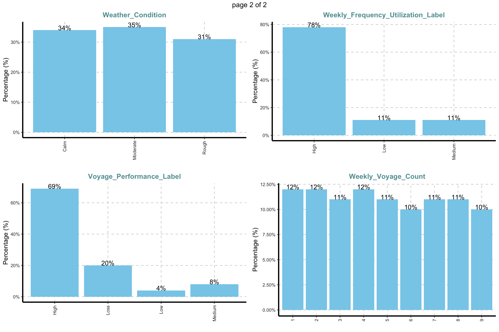
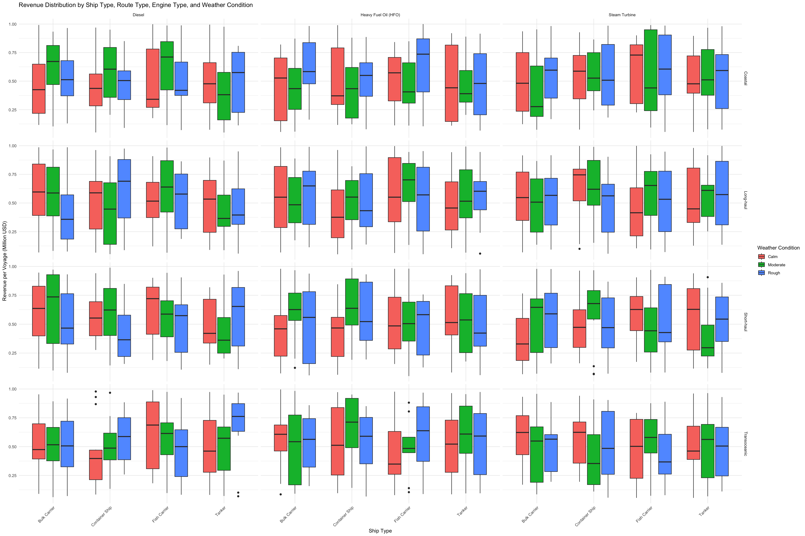

pacman::p_load(tidyverse,
ggplot2,
skimr, # For data summary
janitor, # For cleaning column names
SmartEDA,
easystats,
gtsummary,
ggstatsplot,
knitr,
kableExtra,
patchwork,
GGally,
ggridges,
lubridate,
scales)Take Home Exercise 01
Overview and Background: Ship Performance in the Gulf of Guinea
1 Introduction
The maritime industry is a cornerstone of global trade, ensuring the smooth transportation of goods across continents. The efficient performance of ships is crucial to optimizing fuel consumption, minimizing operational costs, and maximizing revenue. This assignment explores ship performance trends using the Ship Performance Clustering Dataset, focusing on ships operating in the Gulf of Guinea—a vital maritime region known for its economic and strategic importance.
By analyzing ship performance metrics such as speed, efficiency, operational cost, and revenue, we aim to uncover insights that can enhance operational decision-making. This study employs data visualization techniques to identify key patterns, trends, and potential optimizations in ship performance.

1.1 Key Observations from the Map
Countries Surrounding the Gulf of Guinea
- The Gulf of Guinea is bordered by West and Central African nations, including: Nigeria, Ghana, Ivory Coast, Liberia, Senegal, Benin, Togo, Cameroon, Gabon, Angola, Equatorial Guinea, and the Democratic Republic of the Congo.
- These countries rely heavily on ports, fishing, and offshore oil production.
Strategic Maritime Significance
- The Niger Delta, highlighted in yellow, is a key oil-producing region in Nigeria, contributing to the global energy supply.
- The ports along the Gulf of Guinea serve as major hubs for international trade, handling large volumes of cargo and oil shipments.
Security Concerns:
- The Gulf of Guinea is a hotspot for maritime piracy, especially near Nigeria, Cameroon, and Ghana.
- Ships navigating these waters often face security risks, requiring escort vessels, naval patrols, and advanced tracking systems.
Shipping and Economic Importance
- The Atlantic Ocean shipping lanes passing through the Gulf of Guinea connect Africa to Europe, Asia, and the Americas.
- Major exports include crude oil, liquefied natural gas (LNG), timber, cocoa, and fish.
1.2 Relevance to This Assignment
For an analysis of ship performance in terms of profitability in the Gulf of Guinea, it would involve integrating the following tasks:
Route efficiency for profit optimization: Compare vessel performance and profit margins across short-haul, long-haul, and transoceanic routes. Identify which routes yield the highest returns relative to operational costs.
Weather impact on profitability: Examine how adverse conditions (e.g., storms, rough seas) influence speed, fuel consumption, and ultimately, voyage revenue and profitability.
Operational cost variations: Investigate differences in costs tied to fuel prices, maintenance, and shipping lanes to pinpoint opportunities for cost savings and revenue maximization.
2 Background and Content
2.1 Maritime Significance of the Gulf of Guinea
The Gulf of Guinea serves as a major maritime trade route, connecting West Africa to global markets. The region hosts various types of commercial ships, including tankers, container ships, and bulk carriers, each operating under different economic and environmental conditions. Given the challenges posed by fuel costs, maintenance, and weather conditions, shipowners and operators constantly seek ways to improve efficiency while reducing operational expenses.
2.2 Data Overview
The dataset used in this study is a synthetic but realistic representation of maritime operations. The key attributes include:
- Speed Over Ground (knots)
- Distance Traveled (nautical miles)
- Engine Power (kW)
- Operational Cost per Voyage (USD)
- Revenue per Voyage (USD)
- Efficiency (nautical miles per kilowatt-hour)
- Ship Type, Route Type, Engine Type, and Maintenance Status
This dataset provides a rich foundation for exploratory data analysis (EDA), clustering analysis, and performance optimization.
2.2.1 Understanding the Dataset
This dataset consists of 2736 rows and 18 columns, categorized into numerical and categorical features. Key attributes include:
2.2.1.1 Numerical Features (12 Columns)
- Speed_Over_Ground_knots – Ship speed over water (knots)
- Engine_Power_kW – Engine power output (kilowatts)
- Distance_Traveled_nm – Distance traveled per voyage (nautical miles)
- Draft_meters – The vertical distance from the waterline to the bottom of the hull (meters)
- Cargo_Weight_tons – Weight of the cargo transported (metric tons)
- Operational_Cost_USD – Cost per voyage (USD)
- Revenue_per_Voyage_USD – Revenue per voyage (USD)
- Turnaround_Time_hours – Time spent in port between arrival and departure (hours)
- Efficiency_nm_per_kWh – Energy efficiency in nautical miles per kilowatt-hour
- Seasonal_Impact_Score – Factor capturing how seasonal conditions affect operations (e.g., ice, monsoons)
- Weekly_Voyage_Count – Number of voyages carried out on a weekly basis
- Average_Load_Percentage – Percentage of the ship’s cargo capacity utilized per voyage
2.2.1.2 Categorical Features (5 Columns)
- Ship_Type – Type of the ship (e.g., Container Ship, Fish Carrier, Bulk Carrier)
- Route_Type – Type of route (e.g., Short-haul, Long-haul, Transoceanic)
- Engine_Type – Type of engine/fuel (e.g., Diesel, Heavy Fuel Oil, Steam Turbine)
- Maintenance_Status – Overall maintenance condition (e.g., Good, Fair, Critical)
- Weather_Condition – Weather or sea state during the voyage (e.g., Calm, Moderate, Rough)
2.2.2 Summary
- Total Columns: 18
- Breakdown by Data Type:
- Date/Time: 1 column (Date)
- Numeric: 12 columns (e.g., Speed_Over_Ground_knots, Cargo_Weight_tons)
- Categorical: 5 columns (e.g., Ship_Type, Engine_Type)
These columns collectively capture operational, financial, and environmental factors that can be used to measure profitability and optimize operational efficiency. By examining the interplay between operational costs, revenue, speed, and fuel consumption—and factoring in variables like maintenance status, seasonal impact, and route characteristics—shipping companies gain actionable insights into how best to manage costs, improve turnaround times, and increase revenue. This, in turn, supports data-driven decisions aimed at maximizing margins, minimizing environmental impact, and ensuring sustainable, efficient voyages.
3 Load & Explore the Dataset
- Loading the required libraries
- Loading the dataset into R.
- Checking the structure (columns, data types).
- Identifying missing values and duplicates.
3.1 Loading Libraries
3.2 Essential R Packages for Data Science and Visualization
This document provides an overview of essential R packages commonly used for data science, data visualization, and dynamic reporting.
3.2.1 Core Data Science Libraries
- tidyverse: A collection of integrated packages designed for modern data science workflows, including data import, tidying, transformation, visualization, and modeling.
- haven: Enables R to read and write data stored in SAS, SPSS, and Stata formats, ensuring seamless interoperability with statistical software.
- knitr: Facilitates dynamic report generation, allowing users to embed R code in markdown and generate high-quality documents.
3.2.2 Visualization Enhancements for ggplot2
- patchwork: Simplifies the arrangement of multiple ggplot2-based visualizations into composite figures for improved storytelling.
- ggthemes: Provides additional themes, scales, and geoms to enhance the appearance of ggplot2 visualizations.
- scales: Supports improved data labeling, annotation, and scale transformations for ggplot2.
- ggridges: Enables the creation of ridgeline plots, useful for visualizing distribution changes over time or across categories.
- ggpubr: Provides functions for creating publication-ready plots with minimal effort.
- gganimate: Extends ggplot2 to include animation, making it possible to visualize dynamic data over time.
- ggdist: Offers enhanced tools for visualizing statistical distributions and uncertainties in data.
- ggtext: Enhances text rendering and formatting in ggplot2 visualizations.
- ggalt: A collection of additional geoms, coordinates, and statistics that extend ggplot2 capabilities.
- ggextra: Adds marginal plots and supplementary visual elements to ggplot2 graphics.
- cowplot: Provides tools for creating publication-quality figures, including alignment functions and themes for consistent presentation.
- ggnewscale: Allows the definition of multiple independent scales within a single ggplot2 visualization, useful for complex multivariate plots.
3.3 Loading the libraries using Pacman
3.4 Load & Inspect Data
ship_data <- read.csv("data/Ship_Performance_Dataset.csv")3.4.1 Data Overview
ship_data %>%
ExpData(type = 1) Descriptions Value
1 Sample size (nrow) 2736
2 No. of variables (ncol) 18
3 No. of numeric/interger variables 12
4 No. of factor variables 0
5 No. of text variables 6
6 No. of logical variables 0
7 No. of identifier variables 11
8 No. of date variables 0
9 No. of zero variance variables (uniform) 0
10 %. of variables having complete cases 100% (18)
11 %. of variables having >0% and <50% missing cases 0% (0)
12 %. of variables having >=50% and <90% missing cases 0% (0)
13 %. of variables having >=90% missing cases 0% (0)ship_data %>%
ExpData(type = 2) Index Variable_Name Variable_Type Sample_n Missing_Count
1 1 Date character 2736 0
2 2 Ship_Type character 2736 0
3 3 Route_Type character 2736 0
4 4 Engine_Type character 2736 0
5 5 Maintenance_Status character 2736 0
6 6 Speed_Over_Ground_knots numeric 2736 0
7 7 Engine_Power_kW numeric 2736 0
8 8 Distance_Traveled_nm numeric 2736 0
9 9 Draft_meters numeric 2736 0
10 10 Weather_Condition character 2736 0
11 11 Cargo_Weight_tons numeric 2736 0
12 12 Operational_Cost_USD numeric 2736 0
13 13 Revenue_per_Voyage_USD numeric 2736 0
14 14 Turnaround_Time_hours numeric 2736 0
15 15 Efficiency_nm_per_kWh numeric 2736 0
16 16 Seasonal_Impact_Score numeric 2736 0
17 17 Weekly_Voyage_Count integer 2736 0
18 18 Average_Load_Percentage numeric 2736 0
Per_of_Missing No_of_distinct_values
1 0 57
2 0 5
3 0 5
4 0 4
5 0 4
6 0 2736
7 0 2736
8 0 2736
9 0 2736
10 0 4
11 0 2736
12 0 2736
13 0 2736
14 0 2736
15 0 2736
16 0 2736
17 0 9
18 0 27363.4.2 Glimpse the Data
# Check structure
glimpse(ship_data)Rows: 2,736
Columns: 18
$ Date <chr> "2023-06-04", "2023-06-11", "2023-06-18", "202…
$ Ship_Type <chr> "Container Ship", "Fish Carrier", "Container S…
$ Route_Type <chr> "None", "Short-haul", "Long-haul", "Transocean…
$ Engine_Type <chr> "Heavy Fuel Oil (HFO)", "Steam Turbine", "Dies…
$ Maintenance_Status <chr> "Critical", "Good", "Fair", "Fair", "Fair", "F…
$ Speed_Over_Ground_knots <dbl> 12.59756, 10.38758, 20.74975, 21.05510, 13.742…
$ Engine_Power_kW <dbl> 2062.9840, 1796.0574, 1648.5567, 915.2618, 108…
$ Distance_Traveled_nm <dbl> 1030.9436, 1060.4864, 658.8741, 1126.8225, 144…
$ Draft_meters <dbl> 14.132284, 14.653083, 7.199261, 11.789063, 9.7…
$ Weather_Condition <chr> "Moderate", "Rough", "Moderate", "Moderate", "…
$ Cargo_Weight_tons <dbl> 1959.0179, 162.3947, 178.0409, 1737.3853, 260.…
$ Operational_Cost_USD <dbl> 483832.35, 483388.00, 448543.40, 261349.61, 28…
$ Revenue_per_Voyage_USD <dbl> 292183.27, 883765.79, 394018.75, 87551.38, 676…
$ Turnaround_Time_hours <dbl> 25.86708, 63.24820, 49.41815, 22.40911, 64.158…
$ Efficiency_nm_per_kWh <dbl> 1.4551789, 0.2903614, 0.4995945, 0.7029057, 1.…
$ Seasonal_Impact_Score <dbl> 1.4156533, 0.8856478, 1.4058132, 1.3707043, 0.…
$ Weekly_Voyage_Count <int> 1, 6, 9, 1, 8, 7, 3, 6, 8, 2, 9, 4, 3, 7, 7, 3…
$ Average_Load_Percentage <dbl> 93.76925, 93.89537, 96.21824, 66.19370, 80.008…# Summary statistics
skim(ship_data)| Name | ship_data |
| Number of rows | 2736 |
| Number of columns | 18 |
| _______________________ | |
| Column type frequency: | |
| character | 6 |
| numeric | 12 |
| ________________________ | |
| Group variables | None |
Variable type: character
| skim_variable | n_missing | complete_rate | min | max | empty | n_unique | whitespace |
|---|---|---|---|---|---|---|---|
| Date | 0 | 1 | 10 | 10 | 0 | 57 | 0 |
| Ship_Type | 0 | 1 | 4 | 14 | 0 | 5 | 0 |
| Route_Type | 0 | 1 | 4 | 12 | 0 | 5 | 0 |
| Engine_Type | 0 | 1 | 4 | 20 | 0 | 4 | 0 |
| Maintenance_Status | 0 | 1 | 4 | 8 | 0 | 4 | 0 |
| Weather_Condition | 0 | 1 | 4 | 8 | 0 | 4 | 0 |
Variable type: numeric
| skim_variable | n_missing | complete_rate | mean | sd | p0 | p25 | p50 | p75 | p100 | hist |
|---|---|---|---|---|---|---|---|---|---|---|
| Speed_Over_Ground_knots | 0 | 1 | 17.60 | 4.31 | 10.01 | 13.93 | 17.71 | 21.28 | 25.00 | ▇▇▇▇▇ |
| Engine_Power_kW | 0 | 1 | 1757.61 | 717.00 | 501.03 | 1148.10 | 1757.49 | 2382.59 | 2998.73 | ▇▇▇▇▇ |
| Distance_Traveled_nm | 0 | 1 | 1036.41 | 568.63 | 50.43 | 548.51 | 1037.82 | 1540.93 | 1998.34 | ▇▇▇▇▇ |
| Draft_meters | 0 | 1 | 9.93 | 2.88 | 5.00 | 7.44 | 9.92 | 12.41 | 14.99 | ▇▇▇▇▇ |
| Cargo_Weight_tons | 0 | 1 | 1032.57 | 558.70 | 50.23 | 553.98 | 1043.21 | 1527.72 | 1999.13 | ▇▇▇▇▇ |
| Operational_Cost_USD | 0 | 1 | 255143.34 | 140890.48 | 10092.31 | 131293.38 | 257157.65 | 381796.93 | 499734.87 | ▇▇▇▇▇ |
| Revenue_per_Voyage_USD | 0 | 1 | 521362.06 | 271211.63 | 50351.81 | 290346.39 | 520176.93 | 750072.79 | 999916.70 | ▇▇▇▇▇ |
| Turnaround_Time_hours | 0 | 1 | 41.75 | 17.63 | 12.02 | 26.17 | 41.59 | 57.36 | 71.97 | ▇▇▇▇▇ |
| Efficiency_nm_per_kWh | 0 | 1 | 0.80 | 0.40 | 0.10 | 0.46 | 0.79 | 1.15 | 1.50 | ▇▇▇▇▇ |
| Seasonal_Impact_Score | 0 | 1 | 1.00 | 0.29 | 0.50 | 0.76 | 1.01 | 1.25 | 1.50 | ▇▇▇▇▇ |
| Weekly_Voyage_Count | 0 | 1 | 4.91 | 2.60 | 1.00 | 3.00 | 5.00 | 7.00 | 9.00 | ▇▇▃▇▇ |
| Average_Load_Percentage | 0 | 1 | 75.22 | 14.51 | 50.01 | 62.70 | 75.50 | 87.72 | 100.00 | ▇▇▇▇▇ |
# Check for missing values
colSums(is.na(ship_data)) Date Ship_Type Route_Type
0 0 0
Engine_Type Maintenance_Status Speed_Over_Ground_knots
0 0 0
Engine_Power_kW Distance_Traveled_nm Draft_meters
0 0 0
Weather_Condition Cargo_Weight_tons Operational_Cost_USD
0 0 0
Revenue_per_Voyage_USD Turnaround_Time_hours Efficiency_nm_per_kWh
0 0 0
Seasonal_Impact_Score Weekly_Voyage_Count Average_Load_Percentage
0 0 0 # Check for duplicates
sum(duplicated(ship_data))[1] 03.4.3 Inspect Unique Values of Categorical Data
# Identify columns that are character or factor
cat_cols <- sapply(ship_data, function(x) is.character(x) || is.factor(x))
# Create a vector of categorical column names, excluding "Date"
cat_cols_no_date <- setdiff(names(ship_data)[cat_cols], "Date")
# Loop over those categorical columns (excluding "Date")
for (col_name in cat_cols_no_date) {
cat("\n----------------------------------------\n")
cat("COLUMN:", col_name, "\n")
cat("----------------------------------------\n")
# Show the unique values
print(unique(ship_data[[col_name]]))
}
----------------------------------------
COLUMN: Ship_Type
----------------------------------------
[1] "Container Ship" "Fish Carrier" "Bulk Carrier" "None"
[5] "Tanker"
----------------------------------------
COLUMN: Route_Type
----------------------------------------
[1] "None" "Short-haul" "Long-haul" "Transoceanic" "Coastal"
----------------------------------------
COLUMN: Engine_Type
----------------------------------------
[1] "Heavy Fuel Oil (HFO)" "Steam Turbine" "Diesel"
[4] "None"
----------------------------------------
COLUMN: Maintenance_Status
----------------------------------------
[1] "Critical" "Good" "Fair" "None"
----------------------------------------
COLUMN: Weather_Condition
----------------------------------------
[1] "Moderate" "Rough" "Calm" "None" 3.4.4 Checking for value=“None” in Categorical Data
##| code-fold: true
##| echo: false
##| eval: false
# Identify categorical columns (character or factor)
cat_cols <- sapply(ship_data, function(x) is.character(x) || is.factor(x))
# Count the number of "None" in each row for those columns
none_counts <- apply(ship_data[, cat_cols], 1, function(x) sum(x == "None", na.rm = TRUE))
# Create a summary data frame of counts
summary_counts <- data.frame(
Category = c("one None", "two None", "three None", "more than three None"),
Count = c(
sum(none_counts == 1),
sum(none_counts == 2),
sum(none_counts == 3),
sum(none_counts > 3)
)
)
# Print the summary table with a heading
print("## Summary of 'None' Counts")[1] "## Summary of 'None' Counts"summary_counts %>%
kable("html", caption = "Summary of rows by number of 'None'") %>%
kable_styling(bootstrap_options = c("striped", "hover", "condensed"), full_width = FALSE)| Category | Count |
|---|---|
| one None | 540 |
| two None | 68 |
| three None | 0 |
| more than three None | 1 |
# Subset rows based on the number of "None"
df_one_none <- ship_data[none_counts == 1, ]
df_two_none <- ship_data[none_counts == 2, ]
df_three_none <- ship_data[none_counts == 3, ]
df_four_plus <- ship_data[none_counts >= 4, ]
# Top 10 rows with exactly one "None"
cat("\n## Top 10 Rows with exactly one 'None'\n")
## Top 10 Rows with exactly one 'None'df_one_none %>%
head(10) %>%
kable("html", caption = "Top 10 rows with exactly one 'None'") %>%
kable_styling(bootstrap_options = c("striped", "hover", "condensed"), full_width = FALSE)| Date | Ship_Type | Route_Type | Engine_Type | Maintenance_Status | Speed_Over_Ground_knots | Engine_Power_kW | Distance_Traveled_nm | Draft_meters | Weather_Condition | Cargo_Weight_tons | Operational_Cost_USD | Revenue_per_Voyage_USD | Turnaround_Time_hours | Efficiency_nm_per_kWh | Seasonal_Impact_Score | Weekly_Voyage_Count | Average_Load_Percentage | |
|---|---|---|---|---|---|---|---|---|---|---|---|---|---|---|---|---|---|---|
| 1 | 2023-06-04 | Container Ship | None | Heavy Fuel Oil (HFO) | Critical | 12.59756 | 2062.9840 | 1030.9436 | 14.132284 | Moderate | 1959.01788 | 483832.35 | 292183.3 | 25.86708 | 1.4551789 | 1.4156533 | 1 | 93.76925 |
| 9 | 2023-07-30 | None | Coastal | Heavy Fuel Oil (HFO) | Good | 17.30936 | 1179.0188 | 429.5643 | 6.002358 | Moderate | 1953.44793 | 346071.52 | 448682.9 | 14.45182 | 0.9774483 | 0.7649141 | 8 | 50.24706 |
| 16 | 2023-09-17 | Tanker | Long-haul | None | Good | 15.08722 | 578.8929 | 1932.2131 | 12.998270 | Rough | 403.85428 | 424860.57 | 633712.5 | 68.22836 | 0.6526741 | 1.3086865 | 3 | 74.51022 |
| 21 | 2023-10-22 | Container Ship | None | Diesel | Critical | 23.80385 | 1120.6992 | 1169.4785 | 10.544799 | Rough | 1084.25559 | 377335.18 | 371301.2 | 57.59360 | 1.2623670 | 1.4179010 | 8 | 83.44323 |
| 22 | 2023-10-29 | Bulk Carrier | Short-haul | Diesel | None | 22.76036 | 2335.2629 | 1461.9175 | 7.980762 | Calm | 1100.96855 | 441952.08 | 666766.9 | 35.56856 | 1.0500736 | 0.8750325 | 6 | 92.18716 |
| 23 | 2023-11-05 | None | Coastal | Heavy Fuel Oil (HFO) | Good | 18.75487 | 1305.4237 | 354.5997 | 8.052450 | Calm | 1725.68777 | 14878.15 | 902159.4 | 31.40658 | 0.9300016 | 0.8647717 | 2 | 89.54613 |
| 25 | 2023-11-19 | None | Coastal | Diesel | Good | 18.06901 | 2922.2826 | 559.8613 | 10.417704 | Calm | 1741.08102 | 333900.58 | 848139.3 | 20.00624 | 0.6995534 | 1.1646948 | 4 | 58.54123 |
| 27 | 2023-12-03 | None | Coastal | Heavy Fuel Oil (HFO) | Critical | 20.99496 | 2296.3298 | 275.1871 | 7.124895 | Calm | 53.51655 | 114527.88 | 506111.0 | 52.77458 | 0.2432706 | 0.7576879 | 1 | 66.67839 |
| 33 | 2024-01-14 | Bulk Carrier | None | Heavy Fuel Oil (HFO) | Critical | 18.05569 | 2940.9806 | 1674.0561 | 14.255468 | Calm | 965.73890 | 68846.08 | 124317.1 | 45.59025 | 0.5819657 | 0.9658151 | 1 | 79.69627 |
| 46 | 2024-04-14 | Fish Carrier | Long-haul | Heavy Fuel Oil (HFO) | None | 22.36635 | 2814.3636 | 961.8204 | 5.728426 | Calm | 105.61721 | 400472.42 | 183054.9 | 28.29324 | 1.2339394 | 0.9573110 | 6 | 78.74450 |
# Top 10 rows with exactly two "None"
cat("\n## Top 10 Rows with exactly two 'None'\n")
## Top 10 Rows with exactly two 'None'df_two_none %>%
head(10) %>%
kable("html", caption = "Top 10 rows with exactly two 'None'") %>%
kable_styling(bootstrap_options = c("striped", "hover", "condensed"), full_width = FALSE)| Date | Ship_Type | Route_Type | Engine_Type | Maintenance_Status | Speed_Over_Ground_knots | Engine_Power_kW | Distance_Traveled_nm | Draft_meters | Weather_Condition | Cargo_Weight_tons | Operational_Cost_USD | Revenue_per_Voyage_USD | Turnaround_Time_hours | Efficiency_nm_per_kWh | Seasonal_Impact_Score | Weekly_Voyage_Count | Average_Load_Percentage | |
|---|---|---|---|---|---|---|---|---|---|---|---|---|---|---|---|---|---|---|
| 43 | 2024-03-24 | Tanker | None | Steam Turbine | Critical | 19.08942 | 1095.2398 | 1801.1749 | 14.086731 | None | 858.1013 | 70720.33 | 382123.59 | 66.85377 | 0.7762076 | 0.7934013 | 3 | 85.87867 |
| 129 | 2023-09-10 | Bulk Carrier | Coastal | Steam Turbine | None | 22.70870 | 1512.1199 | 771.3406 | 9.854360 | None | 1580.1024 | 226899.21 | 286758.26 | 39.56307 | 0.8514023 | 0.8086902 | 9 | 90.61944 |
| 135 | 2023-10-22 | None | Long-haul | Diesel | None | 14.64564 | 2605.7648 | 1714.8680 | 11.434511 | Moderate | 682.6991 | 439967.19 | 51708.41 | 55.27975 | 0.5330556 | 1.3134256 | 3 | 58.93742 |
| 199 | 2023-12-10 | None | Coastal | None | Fair | 12.25630 | 568.2896 | 495.4977 | 11.859816 | Calm | 983.0555 | 28916.94 | 93070.13 | 16.16368 | 1.1969162 | 0.7416365 | 1 | 77.79094 |
| 219 | 2024-04-28 | Bulk Carrier | Coastal | None | None | 10.36508 | 1195.3456 | 247.0565 | 12.560964 | Rough | 1098.1778 | 22233.31 | 956502.65 | 61.08365 | 0.7352781 | 1.4287733 | 7 | 64.02880 |
| 237 | 2023-07-30 | Fish Carrier | Short-haul | None | None | 17.07090 | 942.9747 | 913.1115 | 14.485655 | Rough | 670.6977 | 64542.63 | 674707.58 | 30.82242 | 1.2258682 | 1.3498214 | 7 | 52.63198 |
| 313 | 2023-12-10 | Fish Carrier | Short-haul | Diesel | None | 17.40898 | 2825.2216 | 1041.7341 | 13.799273 | None | 734.6318 | 148151.46 | 511022.91 | 34.72301 | 1.0832695 | 0.6020035 | 9 | 77.50350 |
| 363 | 2023-10-22 | Container Ship | None | None | Fair | 18.56602 | 1517.0135 | 1852.6289 | 6.763938 | Moderate | 173.3641 | 434573.62 | 68749.02 | 58.12002 | 0.6350226 | 0.5587151 | 1 | 56.58473 |
| 374 | 2024-01-07 | Bulk Carrier | Coastal | None | Good | 10.51714 | 1297.5769 | 510.8005 | 12.882525 | None | 281.7490 | 251675.04 | 663243.69 | 16.96124 | 1.2928879 | 1.0353919 | 6 | 90.38808 |
| 399 | 2024-06-30 | Bulk Carrier | None | Heavy Fuel Oil (HFO) | Good | 21.33223 | 717.1855 | 697.4926 | 12.962534 | None | 402.5453 | 99466.25 | 98243.61 | 29.22883 | 0.5953693 | 0.8140546 | 6 | 73.37483 |
# Top 10 rows with exactly three "None"
cat("\n## Top 10 Rows with exactly three 'None'\n")
## Top 10 Rows with exactly three 'None'df_three_none %>%
head(10) %>%
kable("html", caption = "Top 10 rows with exactly three 'None'") %>%
kable_styling(bootstrap_options = c("striped", "hover", "condensed"), full_width = FALSE)| Date | Ship_Type | Route_Type | Engine_Type | Maintenance_Status | Speed_Over_Ground_knots | Engine_Power_kW | Distance_Traveled_nm | Draft_meters | Weather_Condition | Cargo_Weight_tons | Operational_Cost_USD | Revenue_per_Voyage_USD | Turnaround_Time_hours | Efficiency_nm_per_kWh | Seasonal_Impact_Score | Weekly_Voyage_Count | Average_Load_Percentage |
|---|---|---|---|---|---|---|---|---|---|---|---|---|---|---|---|---|---|
# All rows with four or more "None"
cat("\n## Rows with four or more 'None'\n")
## Rows with four or more 'None'df_four_plus %>%
kable("html", caption = "Rows with four or more 'None'") %>%
kable_styling(bootstrap_options = c("striped", "hover", "condensed"), full_width = FALSE)| Date | Ship_Type | Route_Type | Engine_Type | Maintenance_Status | Speed_Over_Ground_knots | Engine_Power_kW | Distance_Traveled_nm | Draft_meters | Weather_Condition | Cargo_Weight_tons | Operational_Cost_USD | Revenue_per_Voyage_USD | Turnaround_Time_hours | Efficiency_nm_per_kWh | Seasonal_Impact_Score | Weekly_Voyage_Count | Average_Load_Percentage | |
|---|---|---|---|---|---|---|---|---|---|---|---|---|---|---|---|---|---|---|
| 197 | 2023-11-26 | None | None | None | None | 11.12406 | 1493.909 | 1279.969 | 11.59002 | Rough | 1515.524 | 317587.4 | 583011.8 | 29.87684 | 0.1989973 | 0.9338018 | 9 | 82.86563 |
3.4.5 Removing Rows with None in the Categorical Columns
# Identify categorical columns (character or factor)
cat_cols <- sapply(ship_data, function(x) is.character(x) || is.factor(x))
# Store the number of rows before filtering
num_rows_before <- nrow(ship_data)
# Remove rows where ANY categorical column contains "None"
ship_data_clean <- ship_data %>%
filter(!rowSums(across(which(cat_cols), ~ . == "None")) > 0)
# Store the number of rows after filtering
num_rows_after <- nrow(ship_data_clean)
# Calculate how many rows were deleted
rows_deleted <- num_rows_before - num_rows_after
# Print summary
cat("\n## Summary of Rows Deleted\n\n")
## Summary of Rows Deletedcat("Total rows removed:", rows_deleted, "\n\n")Total rows removed: 609 # Glimpse the cleaned data
ship_data <- ship_data_clean
# glimpse(ship_data)
ship_data %>%
head(10) %>%
kable() %>%
kable_styling(bootstrap_options = c("striped", "hover", "condensed"))| Date | Ship_Type | Route_Type | Engine_Type | Maintenance_Status | Speed_Over_Ground_knots | Engine_Power_kW | Distance_Traveled_nm | Draft_meters | Weather_Condition | Cargo_Weight_tons | Operational_Cost_USD | Revenue_per_Voyage_USD | Turnaround_Time_hours | Efficiency_nm_per_kWh | Seasonal_Impact_Score | Weekly_Voyage_Count | Average_Load_Percentage |
|---|---|---|---|---|---|---|---|---|---|---|---|---|---|---|---|---|---|
| 2023-06-11 | Fish Carrier | Short-haul | Steam Turbine | Good | 10.38758 | 1796.0574 | 1060.4864 | 14.653083 | Rough | 162.3947 | 483388.0 | 883765.79 | 63.24820 | 0.2903614 | 0.8856478 | 6 | 93.89537 |
| 2023-06-18 | Container Ship | Long-haul | Diesel | Fair | 20.74975 | 1648.5567 | 658.8741 | 7.199261 | Moderate | 178.0409 | 448543.4 | 394018.75 | 49.41815 | 0.4995945 | 1.4058132 | 9 | 96.21824 |
| 2023-06-25 | Bulk Carrier | Transoceanic | Steam Turbine | Fair | 21.05510 | 915.2618 | 1126.8225 | 11.789062 | Moderate | 1737.3853 | 261349.6 | 87551.38 | 22.40911 | 0.7029057 | 1.3707043 | 1 | 66.19370 |
| 2023-07-02 | Fish Carrier | Transoceanic | Diesel | Fair | 13.74278 | 1089.7218 | 1445.2812 | 9.727833 | Moderate | 260.5951 | 287718.4 | 676121.46 | 64.15823 | 1.3313431 | 0.5833834 | 8 | 80.00858 |
| 2023-07-09 | Fish Carrier | Long-haul | Heavy Fuel Oil (HFO) | Fair | 18.61620 | 2171.6466 | 723.3042 | 14.916320 | Rough | 1912.5098 | 184569.0 | 776698.35 | 47.47615 | 1.3702060 | 1.4377250 | 7 | 53.17490 |
| 2023-07-16 | Fish Carrier | Transoceanic | Heavy Fuel Oil (HFO) | Critical | 20.43312 | 2505.0435 | 270.1186 | 8.455264 | Rough | 1191.4364 | 434449.3 | 739431.83 | 29.04042 | 1.1203894 | 0.6029316 | 3 | 58.50864 |
| 2023-07-23 | Container Ship | Short-haul | Diesel | Critical | 23.49805 | 814.8065 | 1717.3284 | 9.283780 | Moderate | 318.4493 | 348380.6 | 462211.40 | 52.47860 | 0.6959746 | 1.4086634 | 6 | 94.59197 |
| 2023-08-06 | Container Ship | Long-haul | Diesel | Fair | 23.22710 | 2685.4017 | 1588.7923 | 11.721261 | Calm | 1843.4383 | 149790.2 | 615230.86 | 63.74276 | 0.4406762 | 1.4355687 | 2 | 79.45133 |
| 2023-08-13 | Fish Carrier | Short-haul | Steam Turbine | Fair | 11.63511 | 2522.6972 | 1224.8463 | 10.900540 | Moderate | 1130.6046 | 299189.3 | 749334.91 | 47.66533 | 0.4378355 | 1.1052602 | 9 | 70.50445 |
| 2023-08-20 | Tanker | Transoceanic | Diesel | Good | 18.25358 | 2129.5179 | 1311.9786 | 11.955648 | Rough | 441.2600 | 481866.3 | 738063.17 | 48.18567 | 1.2270642 | 0.9414481 | 4 | 65.98470 |
3.5 New Variables Created for Analysis
By adding these new variables—such as net profit per voyage, weekly totals for profit, revenue, and cost, as well as profit per nautical mile (NM) and per ton—we gain a clearer, more granular perspective on each voyage’s financial performance and operational efficiency. Net profit and weekly totals help reveal whether repeating a given voyage multiple times amplifies gains or losses, while profit margin captures the relative profitability regardless of absolute cost or revenue scale. Metrics like cost per NM, revenue per NM, and profit per NM clarify how well resources are being utilized across varying distances, and analyzing cost, revenue, and profit per ton provides insight into cargo handling efficiency. Altogether, these derived columns facilitate a richer, data‐driven understanding of route profitability, capacity utilization, and operational strategy—essential for making informed decisions in shipping performance analysis.
ship_data <- ship_data %>%
mutate(
# Net profit per voyage
Net_Profit = Revenue_per_Voyage_USD - Operational_Cost_USD,
# Weekly total profit = net profit * weekly voyage count
Weekly_Total_Profit = Net_Profit * Weekly_Voyage_Count,
# Profit margin (per voyage)
Profit_Margin = Net_Profit / Revenue_per_Voyage_USD,
# Weekly totals for revenue and cost
Weekly_Total_Revenue = Revenue_per_Voyage_USD * Weekly_Voyage_Count,
Weekly_Total_Operational_Cost = Operational_Cost_USD * Weekly_Voyage_Count,
# Cost per NM, Revenue per NM
Cost_per_NM = Operational_Cost_USD / Distance_Traveled_nm,
Revenue_per_NM = Revenue_per_Voyage_USD / Distance_Traveled_nm,
# Additional variables requested
Profit_per_NM = (Revenue_per_Voyage_USD - Operational_Cost_USD) / Distance_Traveled_nm,
Cost_per_Ton = Operational_Cost_USD / Cargo_Weight_tons,
Revenue_per_Ton = Revenue_per_Voyage_USD / Cargo_Weight_tons,
Profit_per_Ton = (Revenue_per_Voyage_USD - Operational_Cost_USD) / Cargo_Weight_tons
)
# Quick check of the new columns
# glimpse(ship_data)
ship_data %>%
head(10) %>%
kable() %>%
kable_styling(bootstrap_options = c("striped", "hover", "condensed"))| Date | Ship_Type | Route_Type | Engine_Type | Maintenance_Status | Speed_Over_Ground_knots | Engine_Power_kW | Distance_Traveled_nm | Draft_meters | Weather_Condition | Cargo_Weight_tons | Operational_Cost_USD | Revenue_per_Voyage_USD | Turnaround_Time_hours | Efficiency_nm_per_kWh | Seasonal_Impact_Score | Weekly_Voyage_Count | Average_Load_Percentage | Net_Profit | Weekly_Total_Profit | Profit_Margin | Weekly_Total_Revenue | Weekly_Total_Operational_Cost | Cost_per_NM | Revenue_per_NM | Profit_per_NM | Cost_per_Ton | Revenue_per_Ton | Profit_per_Ton |
|---|---|---|---|---|---|---|---|---|---|---|---|---|---|---|---|---|---|---|---|---|---|---|---|---|---|---|---|---|
| 2023-06-11 | Fish Carrier | Short-haul | Steam Turbine | Good | 10.38758 | 1796.0574 | 1060.4864 | 14.653083 | Rough | 162.3947 | 483388.0 | 883765.79 | 63.24820 | 0.2903614 | 0.8856478 | 6 | 93.89537 | 400377.79 | 2402266.7 | 0.4530361 | 5302594.72 | 2900328.0 | 455.81726 | 833.35892 | 377.54166 | 2976.62403 | 5442.08478 | 2465.4607 |
| 2023-06-18 | Container Ship | Long-haul | Diesel | Fair | 20.74975 | 1648.5567 | 658.8741 | 7.199261 | Moderate | 178.0409 | 448543.4 | 394018.75 | 49.41815 | 0.4995945 | 1.4058132 | 9 | 96.21824 | -54524.66 | -490721.9 | -0.1383809 | 3546168.72 | 4036890.6 | 680.77251 | 598.01823 | -82.75428 | 2519.32765 | 2213.07975 | -306.2479 |
| 2023-06-25 | Bulk Carrier | Transoceanic | Steam Turbine | Fair | 21.05510 | 915.2618 | 1126.8225 | 11.789062 | Moderate | 1737.3853 | 261349.6 | 87551.38 | 22.40911 | 0.7029057 | 1.3707043 | 1 | 66.19370 | -173798.23 | -173798.2 | -1.9850999 | 87551.38 | 261349.6 | 231.93502 | 77.69757 | -154.23745 | 150.42697 | 50.39261 | -100.0344 |
| 2023-07-02 | Fish Carrier | Transoceanic | Diesel | Fair | 13.74278 | 1089.7218 | 1445.2812 | 9.727833 | Moderate | 260.5951 | 287718.4 | 676121.46 | 64.15823 | 1.3313431 | 0.5833834 | 8 | 80.00858 | 388403.08 | 3107224.7 | 0.5744576 | 5408971.68 | 2301747.0 | 199.07433 | 467.81310 | 268.73877 | 1104.08205 | 2594.52864 | 1490.4466 |
| 2023-07-09 | Fish Carrier | Long-haul | Heavy Fuel Oil (HFO) | Fair | 18.61620 | 2171.6466 | 723.3042 | 14.916320 | Rough | 1912.5098 | 184569.0 | 776698.35 | 47.47615 | 1.3702060 | 1.4377250 | 7 | 53.17490 | 592129.31 | 4144905.2 | 0.7623671 | 5436888.48 | 1291983.3 | 255.17485 | 1073.81976 | 818.64490 | 96.50620 | 406.11472 | 309.6085 |
| 2023-07-16 | Fish Carrier | Transoceanic | Heavy Fuel Oil (HFO) | Critical | 20.43312 | 2505.0435 | 270.1186 | 8.455264 | Rough | 1191.4364 | 434449.3 | 739431.83 | 29.04042 | 1.1203894 | 0.6029316 | 3 | 58.50864 | 304982.56 | 914947.7 | 0.4124553 | 2218295.48 | 1303347.8 | 1608.36493 | 2737.43407 | 1129.06914 | 364.64326 | 620.62215 | 255.9789 |
| 2023-07-23 | Container Ship | Short-haul | Diesel | Critical | 23.49805 | 814.8065 | 1717.3284 | 9.283780 | Moderate | 318.4493 | 348380.6 | 462211.40 | 52.47860 | 0.6959746 | 1.4086634 | 6 | 94.59197 | 113830.79 | 682984.8 | 0.2462743 | 2773268.41 | 2090283.6 | 202.86196 | 269.14561 | 66.28365 | 1093.99093 | 1451.44440 | 357.4535 |
| 2023-08-06 | Container Ship | Long-haul | Diesel | Fair | 23.22710 | 2685.4017 | 1588.7923 | 11.721261 | Calm | 1843.4383 | 149790.2 | 615230.86 | 63.74276 | 0.4406762 | 1.4355687 | 2 | 79.45133 | 465440.65 | 930881.3 | 0.7565301 | 1230461.71 | 299580.4 | 94.27929 | 387.23178 | 292.95249 | 81.25589 | 333.74096 | 252.4851 |
| 2023-08-13 | Fish Carrier | Short-haul | Steam Turbine | Fair | 11.63511 | 2522.6972 | 1224.8463 | 10.900540 | Moderate | 1130.6046 | 299189.3 | 749334.91 | 47.66533 | 0.4378355 | 1.1052602 | 9 | 70.50445 | 450145.58 | 4051310.3 | 0.6007268 | 6744014.23 | 2692704.0 | 244.26684 | 611.77875 | 367.51190 | 264.62772 | 662.77361 | 398.1459 |
| 2023-08-20 | Tanker | Transoceanic | Diesel | Good | 18.25358 | 2129.5179 | 1311.9786 | 11.955648 | Rough | 441.2600 | 481866.3 | 738063.17 | 48.18567 | 1.2270642 | 0.9414481 | 4 | 65.98470 | 256196.91 | 1024787.6 | 0.3471206 | 2952252.69 | 1927465.0 | 367.28211 | 562.55733 | 195.27522 | 1092.02351 | 1672.62662 | 580.6031 |
3.5.1 Revenue Leakage Estimates from Average_Load_Percentage
Revenue Leakage quantifies how much revenue is foregone by not operating at full capacity. By comparing the actual revenue per voyage against a hypothetical 100% load scenario, the new Revenue_Leakage field highlights how much potential income is lost when ships sail below maximum utilization. This metric provides a tangible financial estimate of the cost of underused capacity, guiding decisions about pricing, scheduling, and cargo allocation to maximize profitability.
- Average_Load_Percentage / 100 converts the percentage to a decimal (e.g., 80 → 0.80).
- Revenue_per_Voyage_USD / (Average_Load_Percentage / 100) estimates the hypothetical revenue if the ship had been at 100% load.
- Subtracting Revenue_per_Voyage_USD gives the Revenue_Leakage (the amount “lost” by operating below full capacity).
- case_when ensures that if the load is already at or above 100%, leakage is 0, and handles other edge cases.
ship_data <- ship_data %>%
mutate(
Revenue_Leakage = case_when(
# If load is at or above 100%, there's no "lost" revenue
Average_Load_Percentage >= 100 ~ 0,
# Otherwise, compute the difference between
# "full-load" revenue and actual revenue.
Average_Load_Percentage > 0 ~
(Revenue_per_Voyage_USD / (Average_Load_Percentage / 100)) - Revenue_per_Voyage_USD,
# If load is zero or missing, set leakage to 0 or NA, as appropriate
TRUE ~ 0
)
)This formula (Weekly_Revenue_Leakage = Revenue_Leakage × Weekly_Voyage_Count) converts the per-voyage leakage into a total weekly leakage, reflecting how repeated voyages in the same week amplify revenue loss.
ship_data <- ship_data %>%
mutate(
# Weekly revenue leakage is per-voyage leakage multiplied by how many voyages occur that week
Weekly_Revenue_Leakage = Revenue_Leakage * Weekly_Voyage_Count
)
colnames(ship_data) [1] "Date" "Ship_Type"
[3] "Route_Type" "Engine_Type"
[5] "Maintenance_Status" "Speed_Over_Ground_knots"
[7] "Engine_Power_kW" "Distance_Traveled_nm"
[9] "Draft_meters" "Weather_Condition"
[11] "Cargo_Weight_tons" "Operational_Cost_USD"
[13] "Revenue_per_Voyage_USD" "Turnaround_Time_hours"
[15] "Efficiency_nm_per_kWh" "Seasonal_Impact_Score"
[17] "Weekly_Voyage_Count" "Average_Load_Percentage"
[19] "Net_Profit" "Weekly_Total_Profit"
[21] "Profit_Margin" "Weekly_Total_Revenue"
[23] "Weekly_Total_Operational_Cost" "Cost_per_NM"
[25] "Revenue_per_NM" "Profit_per_NM"
[27] "Cost_per_Ton" "Revenue_per_Ton"
[29] "Profit_per_Ton" "Revenue_Leakage"
[31] "Weekly_Revenue_Leakage" ship_data %>%
head(10) %>%
kable() %>%
kable_styling(bootstrap_options = c("striped", "hover", "condensed"))| Date | Ship_Type | Route_Type | Engine_Type | Maintenance_Status | Speed_Over_Ground_knots | Engine_Power_kW | Distance_Traveled_nm | Draft_meters | Weather_Condition | Cargo_Weight_tons | Operational_Cost_USD | Revenue_per_Voyage_USD | Turnaround_Time_hours | Efficiency_nm_per_kWh | Seasonal_Impact_Score | Weekly_Voyage_Count | Average_Load_Percentage | Net_Profit | Weekly_Total_Profit | Profit_Margin | Weekly_Total_Revenue | Weekly_Total_Operational_Cost | Cost_per_NM | Revenue_per_NM | Profit_per_NM | Cost_per_Ton | Revenue_per_Ton | Profit_per_Ton | Revenue_Leakage | Weekly_Revenue_Leakage |
|---|---|---|---|---|---|---|---|---|---|---|---|---|---|---|---|---|---|---|---|---|---|---|---|---|---|---|---|---|---|---|
| 2023-06-11 | Fish Carrier | Short-haul | Steam Turbine | Good | 10.38758 | 1796.0574 | 1060.4864 | 14.653083 | Rough | 162.3947 | 483388.0 | 883765.79 | 63.24820 | 0.2903614 | 0.8856478 | 6 | 93.89537 | 400377.79 | 2402266.7 | 0.4530361 | 5302594.72 | 2900328.0 | 455.81726 | 833.35892 | 377.54166 | 2976.62403 | 5442.08478 | 2465.4607 | 57458.22 | 344749.33 |
| 2023-06-18 | Container Ship | Long-haul | Diesel | Fair | 20.74975 | 1648.5567 | 658.8741 | 7.199261 | Moderate | 178.0409 | 448543.4 | 394018.75 | 49.41815 | 0.4995945 | 1.4058132 | 9 | 96.21824 | -54524.66 | -490721.9 | -0.1383809 | 3546168.72 | 4036890.6 | 680.77251 | 598.01823 | -82.75428 | 2519.32765 | 2213.07975 | -306.2479 | 15486.49 | 139378.38 |
| 2023-06-25 | Bulk Carrier | Transoceanic | Steam Turbine | Fair | 21.05510 | 915.2618 | 1126.8225 | 11.789062 | Moderate | 1737.3853 | 261349.6 | 87551.38 | 22.40911 | 0.7029057 | 1.3707043 | 1 | 66.19370 | -173798.23 | -173798.2 | -1.9850999 | 87551.38 | 261349.6 | 231.93502 | 77.69757 | -154.23745 | 150.42697 | 50.39261 | -100.0344 | 44714.05 | 44714.05 |
| 2023-07-02 | Fish Carrier | Transoceanic | Diesel | Fair | 13.74278 | 1089.7218 | 1445.2812 | 9.727833 | Moderate | 260.5951 | 287718.4 | 676121.46 | 64.15823 | 1.3313431 | 0.5833834 | 8 | 80.00858 | 388403.08 | 3107224.7 | 0.5744576 | 5408971.68 | 2301747.0 | 199.07433 | 467.81310 | 268.73877 | 1104.08205 | 2594.52864 | 1490.4466 | 168939.72 | 1351517.80 |
| 2023-07-09 | Fish Carrier | Long-haul | Heavy Fuel Oil (HFO) | Fair | 18.61620 | 2171.6466 | 723.3042 | 14.916320 | Rough | 1912.5098 | 184569.0 | 776698.35 | 47.47615 | 1.3702060 | 1.4377250 | 7 | 53.17490 | 592129.31 | 4144905.2 | 0.7623671 | 5436888.48 | 1291983.3 | 255.17485 | 1073.81976 | 818.64490 | 96.50620 | 406.11472 | 309.6085 | 683950.16 | 4787651.15 |
| 2023-07-16 | Fish Carrier | Transoceanic | Heavy Fuel Oil (HFO) | Critical | 20.43312 | 2505.0435 | 270.1186 | 8.455264 | Rough | 1191.4364 | 434449.3 | 739431.83 | 29.04042 | 1.1203894 | 0.6029316 | 3 | 58.50864 | 304982.56 | 914947.7 | 0.4124553 | 2218295.48 | 1303347.8 | 1608.36493 | 2737.43407 | 1129.06914 | 364.64326 | 620.62215 | 255.9789 | 524367.65 | 1573102.95 |
| 2023-07-23 | Container Ship | Short-haul | Diesel | Critical | 23.49805 | 814.8065 | 1717.3284 | 9.283780 | Moderate | 318.4493 | 348380.6 | 462211.40 | 52.47860 | 0.6959746 | 1.4086634 | 6 | 94.59197 | 113830.79 | 682984.8 | 0.2462743 | 2773268.41 | 2090283.6 | 202.86196 | 269.14561 | 66.28365 | 1093.99093 | 1451.44440 | 357.4535 | 26425.63 | 158553.75 |
| 2023-08-06 | Container Ship | Long-haul | Diesel | Fair | 23.22710 | 2685.4017 | 1588.7923 | 11.721261 | Calm | 1843.4383 | 149790.2 | 615230.86 | 63.74276 | 0.4406762 | 1.4355687 | 2 | 79.45133 | 465440.65 | 930881.3 | 0.7565301 | 1230461.71 | 299580.4 | 94.27929 | 387.23178 | 292.95249 | 81.25589 | 333.74096 | 252.4851 | 159118.49 | 318236.98 |
| 2023-08-13 | Fish Carrier | Short-haul | Steam Turbine | Fair | 11.63511 | 2522.6972 | 1224.8463 | 10.900540 | Moderate | 1130.6046 | 299189.3 | 749334.91 | 47.66533 | 0.4378355 | 1.1052602 | 9 | 70.50445 | 450145.58 | 4051310.3 | 0.6007268 | 6744014.23 | 2692704.0 | 244.26684 | 611.77875 | 367.51190 | 264.62772 | 662.77361 | 398.1459 | 313484.44 | 2821359.96 |
| 2023-08-20 | Tanker | Transoceanic | Diesel | Good | 18.25358 | 2129.5179 | 1311.9786 | 11.955648 | Rough | 441.2600 | 481866.3 | 738063.17 | 48.18567 | 1.2270642 | 0.9414481 | 4 | 65.98470 | 256196.91 | 1024787.6 | 0.3471206 | 2952252.69 | 1927465.0 | 367.28211 | 562.55733 | 195.27522 | 1092.02351 | 1672.62662 | 580.6031 | 380473.59 | 1521894.36 |
3.5.2 Voyage Utilization Score
| Score Range | Label |
|---|---|
| ≥ 0.30 | High |
| 0.10 – 0.29 | Medium |
| < 0.10 | Low |
| < 0 | Loss. |
This hybrid metric blends how fully a vessel is loaded and how profit‐efficient it is per dollar of cost. A higher score (≥ 0.30) signals strong utilization and profitability, while a lower score (< 0.10) implies underperformance. Any negative score highlights operations where costs outweigh revenue, even at high load factors. Defining these clear thresholds helps managers quickly identify which voyages are most profitable, which need optimization, and which are outright unviable.
- Voyage Utilization Score = (Average_Load_Percentage ÷ 100) × (Net_Profit ÷ Operational_Cost_USD)
ship_data <- ship_data %>%
mutate(
# Calculate the Voyage Utilization Score
# (substitute the appropriate cost column if it's named differently in your dataset)
Voyage_Utilization_Score = (Average_Load_Percentage / 100) * (Net_Profit / Operational_Cost_USD),
# Create a categorical label based on the defined thresholds
Voyage_Performance_Label = case_when(
Voyage_Utilization_Score >= 0.30 ~ "High",
Voyage_Utilization_Score >= 0.10 ~ "Medium",
Voyage_Utilization_Score >= 0.00 ~ "Low",
TRUE ~ "Loss"
)
)
colnames(ship_data) [1] "Date" "Ship_Type"
[3] "Route_Type" "Engine_Type"
[5] "Maintenance_Status" "Speed_Over_Ground_knots"
[7] "Engine_Power_kW" "Distance_Traveled_nm"
[9] "Draft_meters" "Weather_Condition"
[11] "Cargo_Weight_tons" "Operational_Cost_USD"
[13] "Revenue_per_Voyage_USD" "Turnaround_Time_hours"
[15] "Efficiency_nm_per_kWh" "Seasonal_Impact_Score"
[17] "Weekly_Voyage_Count" "Average_Load_Percentage"
[19] "Net_Profit" "Weekly_Total_Profit"
[21] "Profit_Margin" "Weekly_Total_Revenue"
[23] "Weekly_Total_Operational_Cost" "Cost_per_NM"
[25] "Revenue_per_NM" "Profit_per_NM"
[27] "Cost_per_Ton" "Revenue_per_Ton"
[29] "Profit_per_Ton" "Revenue_Leakage"
[31] "Weekly_Revenue_Leakage" "Voyage_Utilization_Score"
[33] "Voyage_Performance_Label" # Quick preview
ship_data %>%
select(Average_Load_Percentage, Net_Profit, Operational_Cost_USD,
Voyage_Utilization_Score, Voyage_Performance_Label) %>%
head(10) %>%
kable() %>%
kable_styling(bootstrap_options = c("striped", "hover", "condensed"))| Average_Load_Percentage | Net_Profit | Operational_Cost_USD | Voyage_Utilization_Score | Voyage_Performance_Label |
|---|---|---|---|---|
| 93.89537 | 400377.79 | 483388.0 | 0.7777111 | High |
| 96.21824 | -54524.66 | 448543.4 | -0.1169623 | Loss |
| 66.19370 | -173798.23 | 261349.6 | -0.4401900 | Loss |
| 80.00858 | 388403.08 | 287718.4 | 1.0800693 | High |
| 53.17490 | 592129.31 | 184569.0 | 1.7059424 | High |
| 58.50864 | 304982.56 | 434449.3 | 0.4107295 | High |
| 94.59197 | 113830.79 | 348380.6 | 0.3090723 | High |
| 79.45133 | 465440.65 | 149790.2 | 2.4687781 | High |
| 70.50445 | 450145.58 | 299189.3 | 1.0607753 | High |
| 65.98470 | 256196.91 | 481866.3 | 0.3508251 | High |
3.5.3 Weekly Voyage Frequency by Ship Type and Route Type
This pivot table displays how many voyages in the dataset fall under each Ship_Type and Route_Type, broken down by the Weekly_Voyage_Count columns labeled 1 through 9. For instance, in the row for “Bulk Carrier / Short‐haul,” 21 total voyages had a weekly frequency of 1, 34 voyages had a weekly frequency of 2, and so on. The final Subtotal column is the sum of those counts across all frequency buckets, indicating the total number of voyages for that combination of Ship_Type and Route_Type. This format makes it easy to spot which shipping segments operate most frequently at certain counts (e.g., once a week vs. nine times a week) and compare overall totals across different routes and vessel categories.
ship_data %>%
group_by(Weekly_Voyage_Count) %>%
summarise(Record_Count = n()) %>%
arrange(Weekly_Voyage_Count)# A tibble: 9 × 2
Weekly_Voyage_Count Record_Count
<int> <int>
1 1 259
2 2 254
3 3 229
4 4 245
5 5 226
6 6 211
7 7 239
8 8 244
9 9 220ship_data %>%
group_by(Weekly_Voyage_Count, Ship_Type) %>%
summarise(Record_Count = n()) %>%
arrange(Weekly_Voyage_Count, Ship_Type)# A tibble: 36 × 3
# Groups: Weekly_Voyage_Count [9]
Weekly_Voyage_Count Ship_Type Record_Count
<int> <chr> <int>
1 1 Bulk Carrier 65
2 1 Container Ship 75
3 1 Fish Carrier 58
4 1 Tanker 61
5 2 Bulk Carrier 72
6 2 Container Ship 56
7 2 Fish Carrier 58
8 2 Tanker 68
9 3 Bulk Carrier 62
10 3 Container Ship 49
# ℹ 26 more rowswide_table <- ship_data %>%
group_by(Ship_Type, Route_Type, Weekly_Voyage_Count) %>%
summarise(
Sum_of_Weekly_Voyages = sum(Weekly_Voyage_Count),
.groups = "drop"
) %>%
pivot_wider(
names_from = Weekly_Voyage_Count,
values_from = Sum_of_Weekly_Voyages,
values_fill = 0
) %>%
mutate(Subtotal = rowSums(across(`1`:`9`))) %>%
arrange(Ship_Type, Route_Type)
wide_table %>%
kable() %>%
kable_styling(full_width = FALSE) | Ship_Type | Route_Type | 1 | 2 | 3 | 4 | 5 | 6 | 7 | 8 | 9 | Subtotal |
|---|---|---|---|---|---|---|---|---|---|---|---|
| Bulk Carrier | Coastal | 17 | 44 | 57 | 36 | 75 | 54 | 105 | 104 | 171 | 663 |
| Bulk Carrier | Long-haul | 14 | 34 | 54 | 52 | 55 | 66 | 119 | 136 | 180 | 710 |
| Bulk Carrier | Short-haul | 21 | 34 | 27 | 72 | 125 | 90 | 126 | 80 | 144 | 719 |
| Bulk Carrier | Transoceanic | 13 | 32 | 48 | 36 | 60 | 78 | 112 | 136 | 117 | 632 |
| Container Ship | Coastal | 21 | 30 | 39 | 72 | 75 | 72 | 119 | 80 | 99 | 607 |
| Container Ship | Long-haul | 23 | 36 | 15 | 76 | 75 | 132 | 91 | 128 | 198 | 774 |
| Container Ship | Short-haul | 11 | 20 | 36 | 44 | 50 | 54 | 119 | 104 | 108 | 546 |
| Container Ship | Transoceanic | 20 | 26 | 57 | 60 | 95 | 66 | 98 | 120 | 72 | 614 |
| Fish Carrier | Coastal | 12 | 38 | 45 | 60 | 75 | 72 | 84 | 72 | 144 | 602 |
| Fish Carrier | Long-haul | 17 | 24 | 51 | 68 | 85 | 84 | 70 | 144 | 90 | 633 |
| Fish Carrier | Short-haul | 18 | 36 | 27 | 68 | 45 | 84 | 112 | 120 | 90 | 600 |
| Fish Carrier | Transoceanic | 11 | 18 | 42 | 56 | 65 | 96 | 133 | 160 | 198 | 779 |
| Tanker | Coastal | 21 | 46 | 39 | 68 | 20 | 96 | 84 | 192 | 72 | 638 |
| Tanker | Long-haul | 18 | 28 | 54 | 88 | 85 | 66 | 112 | 136 | 90 | 677 |
| Tanker | Short-haul | 15 | 38 | 57 | 60 | 70 | 78 | 84 | 120 | 99 | 621 |
| Tanker | Transoceanic | 7 | 24 | 39 | 64 | 75 | 78 | 105 | 120 | 108 | 620 |
3.5.4 Weekly Frequency Utilization Score
This metric compares each voyage’s weekly frequency to the average frequency (for the same ship type and route) and then factors in the vessel’s load percentage. It tells you whether a particular voyage is sailed more or less often than typical for that category and how effectively its capacity is being used. A high score indicates above‐average sailing frequency and high load factor, while a low score suggests below‐average frequency or underutilized capacity.
Below is a hypothetical range for the Weekly Frequency Utilization Score, aligning closely with industry best practices and reflecting the distribution observed in the processed ship_data. These thresholds may be refined further based on further benchmarks or changing market conditions.
| Score Range | Category | Interpretation |
|---|---|---|
| ≥ 0.35 | High | Frequent sailings at solid load levels (75th percentile or above) |
| 0.20 – 0.34 | Medium | Sufficient frequency and moderate capacity usage |
| 0.05 – 0.19 | Low | Infrequent sailings or partially filled voyages |
| < 0.05 | Minimal | Significantly underutilized capacity or very few weekly departures |
Rationale - High (≥ 0.35): Represents top‐tier performance where voyages are running often and at strong load factors. - Medium (0.20 – 0.34): Indicates moderate efficiency—voyages are either reasonably frequent or well‐loaded, but not at peak levels. - Low (0.05 – 0.19): Captures sporadic or suboptimal voyages—there is likely room to improve scheduling or load management. - Minimal (< 0.05): Signifies major underutilization; either very low frequency or extremely poor load factor.
These thresholds help identify segments or weeks where capacity usage and voyage repetition fall short of internal or industry standards, prompting targeted improvements in scheduling, pricing, or fleet allocation.
The combine relative frequency and capacity utilization. The idea is:
- Compare the actual weekly voyage count to the average weekly voyage count for the same ship–route segment. This ratio indicates whether a particular record’s frequency is above or below average.
- Multiply by the load factor (Average_Load_Percentage ÷ 100), reflecting how fully the vessel is utilized.
Formally:
Weekly_Frequency_Utilization_Score = (Weekly_Voyage_Count / Avg_Weekly_Voyage_Freq_Ship_Route) × (Average_Load_Percentage / 100)
- If Weekly_Voyage_Count is greater than the average for that ship–route combination, the ratio exceeds 1, boosting the score.
- If the vessel also has a high load factor, it further increases the score—meaning it’s sailing more frequently and more fully loaded than its peers.
- Conversely, a below‐average voyage count or low load factor reduces the score.
This approach highlights both how often a particular route is sailed relative to the typical frequency in that segment and how effectively its capacity is used.
ship_data <- ship_data %>%
group_by(Ship_Type, Route_Type) %>%
mutate(
Avg_Weekly_Freq_Ship_Route = mean(Weekly_Voyage_Count, na.rm = TRUE)
) %>%
ungroup() %>%
mutate(
Weekly_Frequency_Utilization_Score = (Weekly_Voyage_Count / Avg_Weekly_Freq_Ship_Route) * (Average_Load_Percentage / 100),
Weekly_Frequency_Utilization_Label = case_when(
Weekly_Frequency_Utilization_Score >= 0.35 ~ "High",
Weekly_Frequency_Utilization_Score >= 0.20 ~ "Medium",
Weekly_Frequency_Utilization_Score >= 0.05 ~ "Low",
TRUE ~ "Minimal"
)
)(
summary_table <- ship_data %>%
select(
Ship_Type,
Route_Type,
Date,
Weekly_Voyage_Count,
Avg_Weekly_Freq_Ship_Route,
Weekly_Frequency_Utilization_Score,
Weekly_Frequency_Utilization_Label
) %>%
head(10)
) %>%
kable() %>%
kable_styling(bootstrap_options = c("striped", "hover", "condensed"))| Ship_Type | Route_Type | Date | Weekly_Voyage_Count | Avg_Weekly_Freq_Ship_Route | Weekly_Frequency_Utilization_Score | Weekly_Frequency_Utilization_Label |
|---|---|---|---|---|---|---|
| Fish Carrier | Short-haul | 2023-06-11 | 6 | 4.761905 | 1.1830817 | High |
| Container Ship | Long-haul | 2023-06-18 | 9 | 5.058823 | 1.7117897 | High |
| Bulk Carrier | Transoceanic | 2023-06-25 | 1 | 5.056000 | 0.1309211 | Low |
| Fish Carrier | Transoceanic | 2023-07-02 | 8 | 5.644927 | 1.1338828 | High |
| Fish Carrier | Long-haul | 2023-07-09 | 7 | 4.795454 | 0.7762023 | High |
| Fish Carrier | Transoceanic | 2023-07-16 | 3 | 5.644927 | 0.3109445 | Medium |
| Container Ship | Short-haul | 2023-07-23 | 6 | 5.200000 | 1.0914458 | High |
| Container Ship | Long-haul | 2023-08-06 | 2 | 5.058823 | 0.3141099 | Medium |
| Fish Carrier | Short-haul | 2023-08-13 | 9 | 4.761905 | 1.3325341 | High |
| Tanker | Transoceanic | 2023-08-20 | 4 | 5.254237 | 0.5023352 | High |
ship_data %>%
head(10) %>%
kable() %>%
kable_styling(
bootstrap_options = c("striped", "hover", "condensed"),
full_width = FALSE
)| Date | Ship_Type | Route_Type | Engine_Type | Maintenance_Status | Speed_Over_Ground_knots | Engine_Power_kW | Distance_Traveled_nm | Draft_meters | Weather_Condition | Cargo_Weight_tons | Operational_Cost_USD | Revenue_per_Voyage_USD | Turnaround_Time_hours | Efficiency_nm_per_kWh | Seasonal_Impact_Score | Weekly_Voyage_Count | Average_Load_Percentage | Net_Profit | Weekly_Total_Profit | Profit_Margin | Weekly_Total_Revenue | Weekly_Total_Operational_Cost | Cost_per_NM | Revenue_per_NM | Profit_per_NM | Cost_per_Ton | Revenue_per_Ton | Profit_per_Ton | Revenue_Leakage | Weekly_Revenue_Leakage | Voyage_Utilization_Score | Voyage_Performance_Label | Avg_Weekly_Freq_Ship_Route | Weekly_Frequency_Utilization_Score | Weekly_Frequency_Utilization_Label |
|---|---|---|---|---|---|---|---|---|---|---|---|---|---|---|---|---|---|---|---|---|---|---|---|---|---|---|---|---|---|---|---|---|---|---|---|
| 2023-06-11 | Fish Carrier | Short-haul | Steam Turbine | Good | 10.38758 | 1796.0574 | 1060.4864 | 14.653083 | Rough | 162.3947 | 483388.0 | 883765.79 | 63.24820 | 0.2903614 | 0.8856478 | 6 | 93.89537 | 400377.79 | 2402266.7 | 0.4530361 | 5302594.72 | 2900328.0 | 455.81726 | 833.35892 | 377.54166 | 2976.62403 | 5442.08478 | 2465.4607 | 57458.22 | 344749.33 | 0.7777111 | High | 4.761905 | 1.1830817 | High |
| 2023-06-18 | Container Ship | Long-haul | Diesel | Fair | 20.74975 | 1648.5567 | 658.8741 | 7.199261 | Moderate | 178.0409 | 448543.4 | 394018.75 | 49.41815 | 0.4995945 | 1.4058132 | 9 | 96.21824 | -54524.66 | -490721.9 | -0.1383809 | 3546168.72 | 4036890.6 | 680.77251 | 598.01823 | -82.75428 | 2519.32765 | 2213.07975 | -306.2479 | 15486.49 | 139378.38 | -0.1169623 | Loss | 5.058823 | 1.7117897 | High |
| 2023-06-25 | Bulk Carrier | Transoceanic | Steam Turbine | Fair | 21.05510 | 915.2618 | 1126.8225 | 11.789062 | Moderate | 1737.3853 | 261349.6 | 87551.38 | 22.40911 | 0.7029057 | 1.3707043 | 1 | 66.19370 | -173798.23 | -173798.2 | -1.9850999 | 87551.38 | 261349.6 | 231.93502 | 77.69757 | -154.23745 | 150.42697 | 50.39261 | -100.0344 | 44714.05 | 44714.05 | -0.4401900 | Loss | 5.056000 | 0.1309211 | Low |
| 2023-07-02 | Fish Carrier | Transoceanic | Diesel | Fair | 13.74278 | 1089.7218 | 1445.2812 | 9.727833 | Moderate | 260.5951 | 287718.4 | 676121.46 | 64.15823 | 1.3313431 | 0.5833834 | 8 | 80.00858 | 388403.08 | 3107224.7 | 0.5744576 | 5408971.68 | 2301747.0 | 199.07433 | 467.81310 | 268.73877 | 1104.08205 | 2594.52864 | 1490.4466 | 168939.72 | 1351517.80 | 1.0800693 | High | 5.644927 | 1.1338828 | High |
| 2023-07-09 | Fish Carrier | Long-haul | Heavy Fuel Oil (HFO) | Fair | 18.61620 | 2171.6466 | 723.3042 | 14.916320 | Rough | 1912.5098 | 184569.0 | 776698.35 | 47.47615 | 1.3702060 | 1.4377250 | 7 | 53.17490 | 592129.31 | 4144905.2 | 0.7623671 | 5436888.48 | 1291983.3 | 255.17485 | 1073.81976 | 818.64490 | 96.50620 | 406.11472 | 309.6085 | 683950.16 | 4787651.15 | 1.7059424 | High | 4.795454 | 0.7762023 | High |
| 2023-07-16 | Fish Carrier | Transoceanic | Heavy Fuel Oil (HFO) | Critical | 20.43312 | 2505.0435 | 270.1186 | 8.455264 | Rough | 1191.4364 | 434449.3 | 739431.83 | 29.04042 | 1.1203894 | 0.6029316 | 3 | 58.50864 | 304982.56 | 914947.7 | 0.4124553 | 2218295.48 | 1303347.8 | 1608.36493 | 2737.43407 | 1129.06914 | 364.64326 | 620.62215 | 255.9789 | 524367.65 | 1573102.95 | 0.4107295 | High | 5.644927 | 0.3109445 | Medium |
| 2023-07-23 | Container Ship | Short-haul | Diesel | Critical | 23.49805 | 814.8065 | 1717.3284 | 9.283780 | Moderate | 318.4493 | 348380.6 | 462211.40 | 52.47860 | 0.6959746 | 1.4086634 | 6 | 94.59197 | 113830.79 | 682984.8 | 0.2462743 | 2773268.41 | 2090283.6 | 202.86196 | 269.14561 | 66.28365 | 1093.99093 | 1451.44440 | 357.4535 | 26425.63 | 158553.75 | 0.3090723 | High | 5.200000 | 1.0914458 | High |
| 2023-08-06 | Container Ship | Long-haul | Diesel | Fair | 23.22710 | 2685.4017 | 1588.7923 | 11.721261 | Calm | 1843.4383 | 149790.2 | 615230.86 | 63.74276 | 0.4406762 | 1.4355687 | 2 | 79.45133 | 465440.65 | 930881.3 | 0.7565301 | 1230461.71 | 299580.4 | 94.27929 | 387.23178 | 292.95249 | 81.25589 | 333.74096 | 252.4851 | 159118.49 | 318236.98 | 2.4687781 | High | 5.058823 | 0.3141099 | Medium |
| 2023-08-13 | Fish Carrier | Short-haul | Steam Turbine | Fair | 11.63511 | 2522.6972 | 1224.8463 | 10.900540 | Moderate | 1130.6046 | 299189.3 | 749334.91 | 47.66533 | 0.4378355 | 1.1052602 | 9 | 70.50445 | 450145.58 | 4051310.3 | 0.6007268 | 6744014.23 | 2692704.0 | 244.26684 | 611.77875 | 367.51190 | 264.62772 | 662.77361 | 398.1459 | 313484.44 | 2821359.96 | 1.0607753 | High | 4.761905 | 1.3325341 | High |
| 2023-08-20 | Tanker | Transoceanic | Diesel | Good | 18.25358 | 2129.5179 | 1311.9786 | 11.955648 | Rough | 441.2600 | 481866.3 | 738063.17 | 48.18567 | 1.2270642 | 0.9414481 | 4 | 65.98470 | 256196.91 | 1024787.6 | 0.3471206 | 2952252.69 | 1927465.0 | 367.28211 | 562.55733 | 195.27522 | 1092.02351 | 1672.62662 | 580.6031 | 380473.59 | 1521894.36 | 0.3508251 | High | 5.254237 | 0.5023352 | High |
write_csv(ship_data, "data/Updated_Ship_Data.csv")4 Exploratory Data Analysis
4.1 Univariate Analysis - Histograms of Key Profitability Metrics
These histograms reveal key profitability patterns, highlighting profit distribution, cost variability, and revenue inefficiencies. Net Profit and Weekly Total Profit show whether voyages are mostly profitable or loss-making, while Operational Costs indicate potential inefficiencies. Revenue Leakage suggests lost income due to underutilization, and the skewness in Weekly Revenue and Costs underscores the need for better pricing and resource allocation. These insights directly support optimizing fleet management, cost reduction, and profit maximization in our shipping performance analysis.
library(tidyverse)
# Choose 8 columns that are more profitability-related
my_columns <- c(
"Weekly_Total_Profit",
"Weekly_Total_Revenue",
"Weekly_Revenue_Leakage",
"Weekly_Total_Operational_Cost",
"Net_Profit",
"Revenue_per_Voyage_USD",
"Operational_Cost_USD",
"Revenue_Leakage"
)
# Subset these columns and reshape to long format
ship_data_long <- ship_data %>%
select(all_of(my_columns)) %>%
pivot_longer(
cols = everything(),
names_to = "Metric",
values_to = "Value"
) %>%
drop_na()
# Draw histograms for each metric in a facet-wrap layout
ggplot(ship_data_long, aes(x = Value)) +
geom_histogram(bins = 30, fill = "steelblue", color = "white") +
facet_wrap(~ Metric, scales = "free_x", ncol = 2) +
labs(
title = "Histograms of Key Profitability Metrics",
x = NULL,
y = "Count"
) +
theme_minimal()4.2 Data Distribution Insight
Below is a condensed overview of the Ship Type–only ridgelines alongside the more detailed Ship + Route breakdown:
- Ship Type–Only Distributions
- Offers a high‐level look at how each vessel class trends in terms of net profit, operational costs, and revenue. For example, Tankers may peak at higher costs, whereas Bulk Carriers might sit somewhere in the moderate range. This macro view quickly shows which ship types are consistently profitable (distribution shifted to the right) or face more variance.
- Ship & Route Combined Distributions
- Drills further into route type (short‐haul, long‐haul, etc.) within each ship class. You see not only how the vessel itself behaves financially, but also how those finances change according to route demands. Some short‐haul routes might yield fewer outliers or tighter profit margins, while long‐haul or transoceanic trips could show peaks at higher revenue but potentially higher costs.
Key Insights
Profitability Gaps: Net profit and profit margin curves highlight where certain ships/routes excel or struggle.
Cost vs. Revenue: Operational cost curves often correlate with higher revenues—but not always enough to guarantee top‐tier profit.
Revenue Leakage: Sharp right‐skew in weekly or per‐voyage leakage indicates a small subset of voyages experiencing disproportionately high lost revenue.
Overall, ship‐only plots are great for broad, fleet‐wide comparisons, while the ship‐route ridgelines pinpoint exactly which combinations drive or drain profitability. This dual perspective helps direct strategic decisions: from general fleet allocation (which ship types to expand or optimize) down to route‐level optimization (improving high‐cost or under‐utilized segments).
4.2.1 By Ship
# Choose 8 key profitability-related columns
my_columns <- c(
"Weekly_Total_Profit",
"Weekly_Total_Revenue",
"Weekly_Total_Operational_Cost",
"Weekly_Revenue_Leakage",
"Net_Profit",
"Profit_Margin",
"Revenue_per_Voyage_USD",
"Operational_Cost_USD"
)
# Transform data into long format for plotting
ship_data_long <- ship_data %>%
select(Ship_Type, all_of(my_columns)) %>%
pivot_longer(
cols = -Ship_Type, # Keep Ship_Type as a category
names_to = "Metric",
values_to = "Value"
) %>%
drop_na()
# Plot ridgeline density distributions
ggplot(ship_data_long, aes(x = Value, y = Ship_Type, fill = Ship_Type)) +
geom_density_ridges(alpha = 0.7, scale = 1) +
facet_wrap(~ Metric, scales = "free_x", ncol = 2) + # Display 2 columns for better spacing
theme_minimal() +
labs(
title = "Ridgeline Density of Key Profitability Metrics by Ship Type",
x = "Value",
y = "Ship Type"
) +
scale_x_continuous(labels = scales::dollar_format()) +
theme(legend.position = "none")4.2.2 By Ship_Type and Route_Type
library(tidyverse)
library(ggridges)
# 1. Choose 8 key profitability-related columns
my_columns <- c(
"Weekly_Total_Profit",
"Weekly_Total_Revenue",
"Weekly_Total_Operational_Cost",
"Weekly_Revenue_Leakage",
"Net_Profit",
"Profit_Margin",
"Revenue_per_Voyage_USD",
"Operational_Cost_USD"
)
# 2. Combine Ship_Type and Route_Type into one column, then select + pivot
ship_data_long <- ship_data %>%
mutate(ShipRoute = paste(Ship_Type, Route_Type, sep = " - ")) %>%
select(ShipRoute, all_of(my_columns)) %>%
pivot_longer(
cols = -ShipRoute,
names_to = "Metric",
values_to = "Value"
) %>%
drop_na()
# 3. Plot ridgeline density distributions, faceted by each metric
ggplot(ship_data_long, aes(x = Value, y = ShipRoute, fill = ShipRoute)) +
geom_density_ridges(alpha = 0.7, scale = 1) +
facet_wrap(~ Metric, scales = "free_x", ncol = 2) +
theme_minimal() +
labs(
title = "Ridgeline Density of Key Profitability Metrics by Ship & Route",
x = "Value",
y = "Ship - Route"
) +
scale_x_continuous(labels = scales::dollar_format()) +
theme(legend.position = "none")4.3 Pairwise Correlation of Key Profit & Cost Features
rom the scatterplot matrix and correlation coefficients, we see a strong positive relationship between weekly revenue and weekly profit, indicating that higher revenue strongly elevates profitability. Operational cost also correlates positively with weekly revenue—implying more expensive voyages tend to generate higher revenue, but not necessarily an equivalent rise in net profit. Profit margin shows a clear positive link with net profit as well, though it seems less influenced by distance or cargo weight. Seasonal impact and distance traveled have only mild correlations with these profit/cost variables, suggesting that while factors like seasonal conditions or route length do matter, they’re not the primary drivers of overall profitability. These insights highlight revenue and cost management—and maintaining a high profit margin—as pivotal to boosting total profits in the data.
# Update your numeric features with those most relevant to profit and cost:
ship_data_num <- ship_data %>%
select(
Weekly_Total_Profit,
Weekly_Total_Operational_Cost,
Weekly_Total_Revenue,
Net_Profit, # or Profit_per_Voyage_USD if you prefer per-voyage metrics
Profit_Margin,
Cargo_Weight_tons,
Seasonal_Impact_Score,
Distance_Traveled_nm
) %>%
na.omit()
# Generate the pairwise scatterplot matrix with correlation coefficients
ggpairs(ship_data_num)4.4 K-Mean Clustering
Below is a high‐level approach to perform K‐means clustering on Ship_Type and Route_Type but based on numeric profitability metrics (like revenue, cost, and profit). Because K‐means requires numeric features,first is to aggregate the dataset by (Ship_Type, Route_Type) and compute relevant revenue and cost statistics. Then clustering these route‐type/ship‐type combinations to discover natural groupings (e.g., high‐profit vs. low‐profit segments).
ship_agg <- ship_data %>%
group_by(Ship_Type, Route_Type) %>%
summarise(
Avg_Revenue = mean(Revenue_per_Voyage_USD, na.rm = TRUE),
Avg_Cost = mean(Operational_Cost_USD, na.rm = TRUE),
Avg_Profit = mean(Net_Profit, na.rm = TRUE),
Avg_Weekly_Rev = mean(Weekly_Total_Revenue, na.rm = TRUE),
Avg_Weekly_Cost= mean(Weekly_Total_Operational_Cost, na.rm = TRUE),
Avg_Weekly_Prof= mean(Weekly_Total_Profit, na.rm = TRUE),
.groups = "drop"
)ship_agg_numeric <- ship_agg %>%
select(-Ship_Type, -Route_Type) # just keep numeric columns
# Scale using base R (or use tidymodels recipe)
ship_agg_scaled <- scale(ship_agg_numeric) %>%
as.data.frame() # convert matrix back to data frameset.seed(123) # reproducibility
k <- 3
kmeans_model <- kmeans(ship_agg_scaled, centers = k, nstart = 10)
# Store cluster assignments
ship_agg$Cluster <- factor(kmeans_model$cluster)ship_agg %>%
arrange(Cluster) %>%
select(Ship_Type, Route_Type, Cluster, Avg_Revenue, Avg_Cost, Avg_Profit)# A tibble: 16 × 6
Ship_Type Route_Type Cluster Avg_Revenue Avg_Cost Avg_Profit
<chr> <chr> <fct> <dbl> <dbl> <dbl>
1 Bulk Carrier Short-haul 1 528879. 252698. 276182.
2 Container Ship Coastal 1 506958. 244700. 262258.
3 Container Ship Transoceanic 1 516478. 269646. 246832.
4 Tanker Coastal 1 491895. 245949. 245946.
5 Tanker Long-haul 1 513297. 255736. 257561.
6 Tanker Short-haul 1 503680. 242336. 261345.
7 Bulk Carrier Long-haul 2 542952. 241694. 301258.
8 Container Ship Short-haul 2 555488. 250784. 304704.
9 Fish Carrier Coastal 2 556015. 248327. 307687.
10 Fish Carrier Long-haul 2 547880. 248427. 299453.
11 Bulk Carrier Coastal 3 504851. 265976. 238875.
12 Bulk Carrier Transoceanic 3 514263. 262084. 252179.
13 Container Ship Long-haul 3 525549. 276498. 249051.
14 Fish Carrier Short-haul 3 528934. 292335. 236599.
15 Fish Carrier Transoceanic 3 508785. 250480. 258305.
16 Tanker Transoceanic 3 540962. 264517. 276446.ship_agg %>%
group_by(Cluster) %>%
summarise(
Avg_of_Avg_Revenue = mean(Avg_Revenue),
Avg_of_Avg_Cost = mean(Avg_Cost),
Avg_of_Avg_Profit = mean(Avg_Profit),
.groups = "drop"
)# A tibble: 3 × 4
Cluster Avg_of_Avg_Revenue Avg_of_Avg_Cost Avg_of_Avg_Profit
<fct> <dbl> <dbl> <dbl>
1 1 510198. 251844. 258354.
2 2 550584. 247308. 303276.
3 3 520557. 268648. 251909.library(factoextra)
fviz_cluster(
object = kmeans_model,
data = ship_agg_scaled,
geom = "point",
ellipse.type = "norm",
main = paste("K-Means Clustering (k =", k, ")")
)4.4.1 Clustering Conclusion
By clustering Ship_Type + Route_Type combinations on their average revenue, cost, and profit, three distinct groups emerged: - Cluster 1 exhibits moderate revenue (around 510k) and cost (about 252k), resulting in a middle‐of‐the‐pack average profit. - Cluster 2 stands out for relatively higher average revenue (~551k) and the lowest cost (~247k), yielding the highest profit among the three clusters. - Cluster 3 shows slightly lower revenue (~521k) than Cluster 2 but higher cost (~269k), which lowers average profit compared to Cluster 2. Overall, Cluster 2 represents the most profitable “sweet spot,” suggesting that those ship–route combinations manage cost and generate revenue more effectively. Cluster 1 also operates decently, but may have room to optimize revenue or reduce costs further. Cluster 3, with elevated costs, may need special attention—either via cost‐reduction measures or route adjustments—to improve profit margins.
4.5 Numeric Variable Distributions
These univariate density plots serve primarily as context for understanding how the numeric data is shaped—whether it’s skewed, multimodal, or contains extreme outliers. While they don’t directly solve profitability or operational questions, they do inform how best to prepare and interpret variables. For instance, highly skewed distributions (like Cost_per_NM) might require log transformations or outlier handling before further modeling. Beyond that, these plots act as a reference—helping confirm which metrics have mostly normal or uniform ranges, and which demand extra caution or pre‐processing steps in advanced analyses.
ship_data %>%
ExpNumViz(target=NULL,
nlim=10,
Page=c(2,2))$`0`
4.6 Pairwise Visualization with Net Profit
These scatter plots compare Net_Profit to each numeric variable, giving a quick look at how profit relates (or doesn’t) to operational metrics such as distance traveled, cost, or revenue. Most features show no strong linear pattern with Net Profit, though some variables—like Operational_Cost_USD and Revenue_per_Voyage_USD—naturally form clearer positive or negative relationships (for example, higher revenue tends to coincide with higher net profit, while high operational costs often correlate with lower or negative net profit). By scanning across all charts, you can identify any notable clusters, outliers, or trends, guiding further analysis into which operational factors drive or hinder profitability.
ship_data %>%
ExpNumViz(target="Net_Profit",
nlim=10,
Page=c(2,2)) #, theme="default")$`0`

4.7 Categorical Feature Summary
Most categorical features appear fairly balanced, with Ship_Type, Engine_Type, and Route_Type all splitting near evenly among their categories. Weather_Condition also has no single category overwhelmingly dominant, though “Calm” and “Moderate” lead slightly. Notably, Weekly_Frequency_Utilization_Label is highly skewed, with nearly 80% of voyages classified as “High,” while Voyage_Performance_Label is similarly dominated by “High” at around 69%. Weekly_Voyage_Count spreads evenly from 1 to 9 (about 10–12% each), indicating no single frequency bucket stands out significantly.
ship_data %>%
ExpCatViz(target=NULL,
col = "sky blue",
clim=10,
margin=2,
Page=c(2,2),
sample=8)$`0`
4.8 Boxplots of Key Financial Metrics
These boxplots provide a concise overview of the distribution and potential outliers in net profit, revenue, operational cost, and profit margin. Visually, you can see where most voyages cluster (the boxes) along with any extreme values (the outliers). For instance, if the net profit boxplot shows a long upper whisker or multiple outliers, it suggests a small number of highly profitable voyages skewing the distribution. Conversely, a collection of outliers below the box indicates that certain voyages are particularly unprofitable or costly. Such deviations from the bulk of the data prompt further investigation into route choices, operational constraints, or pricing strategies that may be causing significant performance differences.
library(tidyverse)
library(patchwork)
library(scales)
# 1. Determine a common scale range for Net Profit, Revenue, and Cost
common_min <- 0
common_max <- max(
ship_data$Net_Profit,
ship_data$Revenue_per_Voyage_USD,
ship_data$Operational_Cost_USD,
na.rm = TRUE
)
# 2. Build the boxplots for p1, p2, p3 with the same y-axis limits
p1 <- ggplot(ship_data, aes(y = Net_Profit)) +
geom_boxplot(fill = "steelblue", alpha = 0.7, outlier.shape = 19) +
scale_y_continuous(
limits = c(common_min, common_max),
labels = comma_format(scale = 1/1000, suffix = "K"),
name = "Net Profit (in thousands USD)"
) +
theme_minimal() +
labs(title = "Net Profit")
p2 <- ggplot(ship_data, aes(y = Revenue_per_Voyage_USD)) +
geom_boxplot(fill = "salmon", alpha = 0.7, outlier.shape = 19) +
scale_y_continuous(
limits = c(common_min, common_max),
labels = comma_format(scale = 1/1000, suffix = "K"),
name = "Revenue (in thousands USD)"
) +
theme_minimal() +
labs(title = "Revenue per Voyage")
p3 <- ggplot(ship_data, aes(y = Operational_Cost_USD)) +
geom_boxplot(fill = "darkgreen", alpha = 0.7, outlier.shape = 19) +
scale_y_continuous(
limits = c(common_min, common_max),
labels = comma_format(scale = 1/1000, suffix = "K"),
name = "Cost (in thousands USD)"
) +
theme_minimal() +
labs(title = "Operational Cost per Voyage")
# 3. Profit Margin uses its original scale
p4 <- ggplot(ship_data, aes(y = Profit_Margin)) +
geom_boxplot(fill = "orchid", alpha = 0.7, outlier.shape = 19) +
labs(
title = "Profit Margin",
y = "Ratio (e.g., 0.2 = 20%)"
) +
theme_minimal()
# 4. Arrange p1, p2, p3 in one row, and p4 in another
(p1 + p2 + p3) /
p4
4.9 Weekly Totals & Revenue Leakage Boxplots
These four boxplots give a clear snapshot of how each voyage’s weekly revenue, costs, profit, and potential revenue loss compare across the dataset. The Weekly Total Revenue and Weekly Total Operational Cost plots help identify whether certain weeks stand out for unusually high or low financial throughput, while the Weekly Total Profit plot highlights weeks where cost efficiency translates into strong bottom lines—or where repeated unprofitable voyages magnify losses. The Revenue Leakage boxplot pinpoints how much potential revenue is lost if load factors are suboptimal, shining a light on opportunities to better utilize capacity.
library(tidyverse)
library(patchwork)
library(scales)
# 1. Compute a shared y-range based on the max across all columns of interest
y_min <- 0
y_max <- max(
ship_data$Weekly_Total_Revenue,
ship_data$Weekly_Total_Operational_Cost,
ship_data$Weekly_Total_Profit,
ship_data$Weekly_Revenue_Leakage,
na.rm = TRUE
)
# 2. Define helper for scale in thousands
scale_thousands <- scale_y_continuous(
limits = c(y_min, y_max),
labels = comma_format(scale = 1/1000, suffix = "K")
)
# 3. Build each boxplot using the common y scale
p1 <- ggplot(ship_data, aes(y = Weekly_Total_Revenue)) +
geom_boxplot(fill = "steelblue", alpha = 0.7, outlier.shape = 19) +
scale_thousands +
labs(
title = "Weekly Total Revenue",
y = "Revenue (in thousands USD)"
) +
theme_minimal()
p2 <- ggplot(ship_data, aes(y = Weekly_Total_Operational_Cost)) +
geom_boxplot(fill = "salmon", alpha = 0.7, outlier.shape = 19) +
scale_thousands +
labs(
title = "Weekly Total Operational Cost",
y = "Cost (in thousands USD)"
) +
theme_minimal()
p3 <- ggplot(ship_data, aes(y = Weekly_Total_Profit)) +
geom_boxplot(fill = "darkgreen", alpha = 0.7, outlier.shape = 19) +
scale_thousands +
labs(
title = "Weekly Total Profit",
y = "Profit (in thousands USD)"
) +
theme_minimal()
p4 <- ggplot(ship_data, aes(y = Weekly_Revenue_Leakage)) +
geom_boxplot(fill = "orchid", alpha = 0.7, outlier.shape = 19) +
scale_thousands +
labs(
title = "Weekly Revenue Leakage",
y = "Leakage (in thousands USD)"
) +
theme_minimal()
# 4. Arrange them in a single row (4 columns)
(p1 + p2 + p3 + p4) +
plot_layout(ncol = 4)4.10 Revenue Distribution Across Ship Type, Route, Engine Type, and Weather Conditions
These boxplots illustrate how revenue per voyage varies across Ship Type, Route Type, Engine Type, and Weather Conditions. The facets allow for a detailed comparison:
Route Type (rows): Shows how different shipping routes impact revenue distribution.
Engine Type (columns): Compares revenue performance across Diesel, HFO, and Steam Turbine engines.
Weather Conditions (box colors): Highlights revenue variations under Calm, Moderate, and Rough conditions.
This visualization helps identify which ship-route-engine-weather combinations yield higher or more stable revenue and where variability or inefficiencies may exist.
ggplot(ship_data, aes(x = Ship_Type, y = Revenue_per_Voyage_USD / 1e6, fill = Ship_Type)) +
geom_boxplot() +
facet_grid(Route_Type ~ Engine_Type, scales = "free") + # Split by Route & Engine Type
theme_minimal() +
labs(title = "Revenue Distribution by Ship Type, Route Type, and Engine Type",
x = "Ship Type",
y = "Revenue per Voyage (Million USD)") + # Updated y-axis label
theme(axis.text.x = element_text(angle = 45, hjust = 1)) # Rotate x-axis labels for readabilityggplot(ship_data, aes(x = Ship_Type, y = Revenue_per_Voyage_USD / 1e6, fill = Weather_Condition)) +
geom_boxplot() +
facet_grid(Route_Type ~ Engine_Type, scales = "free") + # Facet by Route Type (rows) & Engine Type (columns)
theme_minimal() +
labs(title = "Revenue Distribution by Ship Type, Route Type, Engine Type, and Weather Condition",
x = "Ship Type",
y = "Revenue per Voyage (Million USD)",
fill = "Weather Condition") + # Updated legend title
theme(axis.text.x = element_text(angle = 45, hjust = 1)) # Rotate x-axis labels for readability
4.11 Smoothed Revenue Trends by Operational Cost (Overall and Faceted by Ship Type)
This visualization presents smoothed revenue trends relative to operational costs, first across all ship types and then faceted by individual ship categories.
Overall Trends (First Plot)
Shows how revenue per voyage changes with operational costs for different ship types (Bulk Carrier, Container Ship, Fish Carrier, Tanker).
Some ships, like Fish Carriers, exhibit nonlinear revenue patterns, while others, like Bulk Carriers, maintain relatively stable trends.
Faceted Trends by Ship Type (Second Plot)
Splits the analysis by ship type, making it easier to compare the impact of route types (Coastal, Long-haul, Short-haul, Transoceanic) within each ship category.
This helps identify whether certain routes consistently maximize revenue at specific cost levels.
Key Insights
Fish Carriers and Container Ships show volatile trends, with sharp peaks and dips, suggesting cost-sensitive revenue swings.
Tankers and Bulk Carriers follow more gradual revenue shifts, indicating that their operational costs and revenue generation may be more stable.
Route Type Differences: Coastal routes often have lower operational costs, while transoceanic routes may require higher spending but can also yield higher revenue.
This analysis provides valuable insights for cost optimization and route planning, helping decision-makers refine pricing strategies, fleet deployment, and operational efficiency across different ship and route types.
ggplot(ship_data, aes(x = Operational_Cost_USD, y = Revenue_per_Voyage_USD, color = Ship_Type)) +
geom_smooth(method = "loess", se = FALSE, linewidth = 1.2) + # LOESS smooth to capture trends
theme_minimal() +
labs(
title = "Smoothed Revenue Trends by Operational Cost",
x = "Operational Cost (K USD)",
y = "Revenue per Voyage (K USD)"
) +
scale_x_continuous(labels = label_number(scale = 1/1000, suffix = "K")) +
scale_y_continuous(labels = label_number(scale = 1/1000, suffix = "K"))# Create a new column combining Ship_Type and Route_Type
ship_data <- ship_data %>%
mutate(ShipRoute = paste(Route_Type, sep = " - "))
ggplot(ship_data, aes(x = Operational_Cost_USD, y = Revenue_per_Voyage_USD, color = ShipRoute)) +
geom_smooth(method = "loess", se = FALSE, linewidth = 1.2) + # LOESS smoothing
facet_wrap(~ Ship_Type, scales = "free_x", ncol = 2) + # Facet by Ship Type, 2 columns
theme_minimal() +
labs(
title = "Smoothed Revenue Trends by Operational Cost (Faceted by Ship Type)",
x = "Operational Cost (K USD)",
y = "Revenue per Voyage (K USD)",
color = "Route Type"
) +
scale_x_continuous(labels = label_number(scale = 1/1000, suffix = "K")) +
scale_y_continuous(labels = label_number(scale = 1/1000, suffix = "K")) +
theme(
legend.position = "bottom",
strip.text = element_text(size = 14, face = "bold"), # Increase facet label size
panel.spacing = unit(2, "lines") # Add spacing between facets
)
5 Quarterly Sales vs. Profit by Ship-Route
This bubble chart not only shows which ship–route pairs generate high or low revenue and profit, but also how deeply each segment impacts overall performance (via bubble size). Large, dark‐blue bubbles in the top‐right reflect routes delivering both strong sales and robust profit, signaling prime candidates for fleet expansion or replication of best practices. Conversely, large, dark‐red bubbles in the bottom‐left highlight routes draining resources—high‐priority for cost reduction, operational fixes, or reallocation of assets.
Several key insights emerge:
Clustered High Performers: If you see multiple ship–route combos grouped together in the top‐right quadrant, it suggests common traits (e.g., route distance, cargo type, or maintenance strategy) that drive success. Replicating these traits in underperforming areas can boost overall margins.
Unexpected Low Profit Despite High Sales: Bubbles in the bottom‐right quadrant indicate possible inefficiencies (fuel cost, cargo handling, or port fees) that erode profits. Tackling these inefficiencies can turn high‐revenue voyages into solid profit contributors.
Niche Profit Scenarios: Small, dark‐blue bubbles in the top‐left quadrant show voyages that quietly generate healthy margins without massive sales. These might be specialized cargo or short‐haul routes where cost discipline yields strong returns.
Strategic Repositioning: Large red bubbles anywhere indicate hefty losses. Whether that’s due to low sales or negative profit, management should consider route optimization, pricing changes, or even withdrawing service from unsustainably unprofitable segments.
Overall, the chart provides actionable intelligence for allocating resources, refining pricing, and guiding fleet deployment decisions. By pinpointing exactly which ship–route combos drive or undermine profitability, stakeholders can focus investment on the strongest segments and rapidly address cost drivers in underperforming ones—ensuring better operational efficiency and maximized returns in the quarters to come.
library(ggplot2)
library(scales)
library(dplyr)
library(lubridate)
library(plotly)
# Convert Date to a proper Date object if necessary (assumes "YYYY-MM-DD" format)
ship_data <- ship_data %>%
mutate(Date = as.Date(Date, format = "%Y-%m-%d"))
# Aggregate data quarterly by Ship_Type and Route_Type
ship_data_quarterly <- ship_data %>%
mutate(
Quarter = paste0(year(Date), "-Q", quarter(Date)),
ShipRoute = paste(Ship_Type, Route_Type, sep = " - ")
) %>%
group_by(Quarter, Ship_Type, Route_Type, ShipRoute) %>%
summarise(
Quarterly_Total_Revenue = sum(Weekly_Total_Revenue, na.rm = TRUE) / 1e6, # in Million USD
Quarterly_Net_Profit = sum(Net_Profit, na.rm = TRUE) / 1e6 # in Million USD
) %>%
ungroup() %>%
mutate(
Sales_Percentile = percent_rank(Quarterly_Total_Revenue) * 100,
Profit_Percentile = percent_rank(Quarterly_Net_Profit) * 100
)
# Create Bubble Chart:
# - X-axis: Sales_Percentile
# - Y-axis: Profit_Percentile
# - Bubble size: absolute profit magnitude
# - Bubble color: sign and magnitude of profit (red for negative, blue for positive)
p <- ggplot(ship_data_quarterly, aes(
x = Sales_Percentile,
y = Profit_Percentile,
size = abs(Quarterly_Net_Profit), # Bubble size: absolute profit
color = Quarterly_Net_Profit, # Bubble color: negative to positive
text = paste(
"Ship-Route:", ShipRoute, "<br>",
"Quarter:", Quarter, "<br>",
"Sales (M):", round(Quarterly_Total_Revenue, 2), "<br>",
"Profit (M):", round(Quarterly_Net_Profit, 2)
)
)) +
# Slight transparency to reduce overlap
geom_point(alpha = 0.6) +
# Quadrant reference lines
geom_hline(yintercept = 50, linetype = "dashed", color = "gray40") +
geom_vline(xintercept = 50, linetype = "dashed", color = "gray40") +
# Quadrant labels (slightly smaller text)
annotate("text", x = 5, y = 90, label = "Low Sales\nHigh Profits", hjust = 0, size = 4) +
annotate("text", x = 75, y = 90, label = "High Sales\nHigh Profits", hjust = 0, size = 4) +
annotate("text", x = 5, y = 10, label = "Low Sales\nLow Profits", hjust = 0, size = 4) +
annotate("text", x = 75, y = 10, label = "High Sales\nLow Profits", hjust = 0, size = 4) +
# Percent-based axes
scale_x_continuous(labels = label_percent(scale = 1), limits = c(0, 100)) +
scale_y_continuous(labels = label_percent(scale = 1), limits = c(0, 120)) +
# Bubble size & color scales
scale_size_continuous(range = c(2, 12), name = "Profit Magnitude (Million)") +
scale_color_gradient2(
low = "red", mid = "white", high = "blue",
midpoint = 0,
name = "Profit (Million)"
) +
# Labels & theme
labs(
title = "Quarterly Sales vs Profit by Ship & Route",
x = "Percentile of Quarterly Sales",
y = "Percentile of Quarterly Profit"
) +
theme_minimal(base_size = 14) +
theme(
legend.position = "right",
panel.grid.minor = element_blank() # Remove minor grid lines for less clutter
)
# Convert to interactive plot with hover tooltips
ggplotly(p, tooltip = "text")6 Summary & Conclusion
A broad exploratory data analysis (EDA) was conducted to evaluate shipping performance from multiple perspectives—including operational cost structures, revenue patterns, load utilization, and overall profitability. Throughout the analysis, a key assumption was that maintenance, fuel, and other overhead expenses were already embedded in each voyage’s operational cost. This allowed a focused look at profitability and ship–route performance without dissecting individual expense types.
Key Insights
Profitability Distribution
Certain voyages deliver consistently high net profit, while others demonstrate significant negative margins. This gap underscores how effectively cost efficiency and route selection drive financial outcomes.
High revenue does not necessarily guarantee strong profit, suggesting that cost factors—even if aggregated—can still erode otherwise promising voyages.
Route & Ship Type Variations
Examining metrics by route type and ship type illuminates distinct operational profiles: some routes thrive with higher revenue or profit, while others reveal cost inefficiencies or require cargo optimization.
Maintenance status, if reflected in cost, may still affect performance differently across the fleet, indicating a need for ongoing upkeep and operational improvements.
Load Utilization & Revenue Leakage
- Insights into average load percentage and potential revenue leakage highlight the financial cost of underutilized capacity. Demand consolidation or dynamic pricing can alleviate partially filled voyages. This includes weekly increase of usage of ships that have low utilization.
Visual Analytics & Bivariate Trends
- Bubble charts and other visual analyses, such as sales vs. profit distributions, reveal clear quadrant patterns. Ship–route combinations in the top‐right quadrant (high revenue, high profit) represent operational success, while those in the bottom‐left require immediate attention or potential route realignment.
6.1 Overall Conclusion
Under the assumption that all relevant costs (maintenance, fuel, etc.) are wrapped into a single operational cost, the focus on voyage profitability clearly identifies which ship–route combinations achieve strong margins and which underperform. High‐performing segments are candidates for scaling or replicating best practices, whereas weaker routes—especially those with large negative profit—may demand cost‐reduction strategies, improved cargo strategies, or potential withdrawal from service. Leveraging these findings enables more precise allocation of resources and targeted optimizations in scheduling and pricing, ultimately strengthening both efficiency and profitability across shipping operations.
7 Future Research
Future research could delve deeper by disaggregating operational costs (e.g., separating maintenance, fuel, and overheads) to pinpoint specific inefficiencies, while also investigating route demand patterns (seasonal fluctuations or market changes) for better cargo allocation and analyzing additional ship attributes (engine efficiency, capacity) to isolate optimal configurations. Integrating predictive modeling would provide forward‐looking cost and revenue forecasts under different operational scenarios, further supporting data‐driven decisions. Beyond profitability, evaluating Environmental, Social, and Governance (ESG) criteria—such as emissions intensity, alternative fuel adoption, and crew welfare—could reveal how green energy solutions and sustainable practices might reduce a vessel’s carbon footprint and comply with evolving regulatory standards. Combining these approaches would produce a holistic assessment of financial performance and environmental responsibility, guiding shipping operations toward both greater profitability and long‐term sustainability.
8 Appendix:
The list of libraries used for the assignment.
tidyverse: A collection of R packages (including dplyr, tidyr, readr, purrr, and more) for data manipulation, exploration, and visualization that share an underlying design philosophy.
ggplot2: The foundation of the Tidyverse visualization framework, implementing the grammar of graphics to create flexible, layered plots.
skimr: Provides a convenient summary of data frames, including descriptive statistics for each column.
janitor: Helps clean and format data frames, particularly useful for making column names consistent and removing duplicates.
SmartEDA: Automates Exploratory Data Analysis tasks, generating summary statistics, univariate distributions, and more with minimal effort.
easystats: A suite of packages (e.g., performance, parameters, effectsize) that unify and streamline statistical analyses in R.
gtsummary: Creates publication-ready summary tables of regression models, descriptive statistics, and more.
ggstatsplot: Extends ggplot2 by adding statistical details (p-values, confidence intervals) into plots, streamlining the creation of exploratory data visualizations with statistical results.
knitr: Powers dynamic report generation, allowing R code to be woven into documents (e.g., R Markdown) with embedded outputs and plots.
kableExtra: Enhances knitr’s kable function, adding styling, formatting, and complex features (like scrollable boxes) to HTML/LaTeX tables.
patchwork: Simplifies the arrangement of multiple ggplot2-based visualizations into composite figures for improved storytelling.
GGally: Extends ggplot2 by offering several functions to plot correlation matrices, pairwise scatterplots, parallel coordinate plots, and more.
ggridges: Enables creation of ridgeline plots, useful for visualizing distribution changes over time or across categories.
lubridate: Facilitates working with dates and times in R, providing intuitive functions to parse, extract, and manipulate time components.
scales: Supports improved data labeling, annotation, and scale transformations for ggplot2, including formatters for percentages, currency, and more.
ggthemes: Provides additional themes, scales, and geoms to enhance the appearance of ggplot2 visualizations.
ggpubr: Supplies functions for creating publication-ready plots with minimal effort, facilitating tasks like adding p-values or significance bars.
gganimate: Extends ggplot2 to include animation capabilities, making it possible to visualize dynamic changes over time.
ggdist: Offers tools for visualizing statistical distributions and uncertainties, such as interval and distribution geoms for ggplot2.
ggtext: Enhances text rendering and formatting in ggplot2, enabling rich markdown/HTML styling within plot labels.
ggalt: A collection of geoms, coordinates, and statistics extending ggplot2 (e.g., dumbbell plots, polar coordinate enhancements).
ggextra: Adds marginal plots and supplementary visual elements (histograms, density plots) to ggplot2 graphics.
cowplot: Offers tools for creating publication-quality ggplot2 figures, including alignment functions and consistent themes.
ggnewscale: Allows definition of multiple independent scales within a single ggplot2 visualization, helpful for complex multivariate displays.